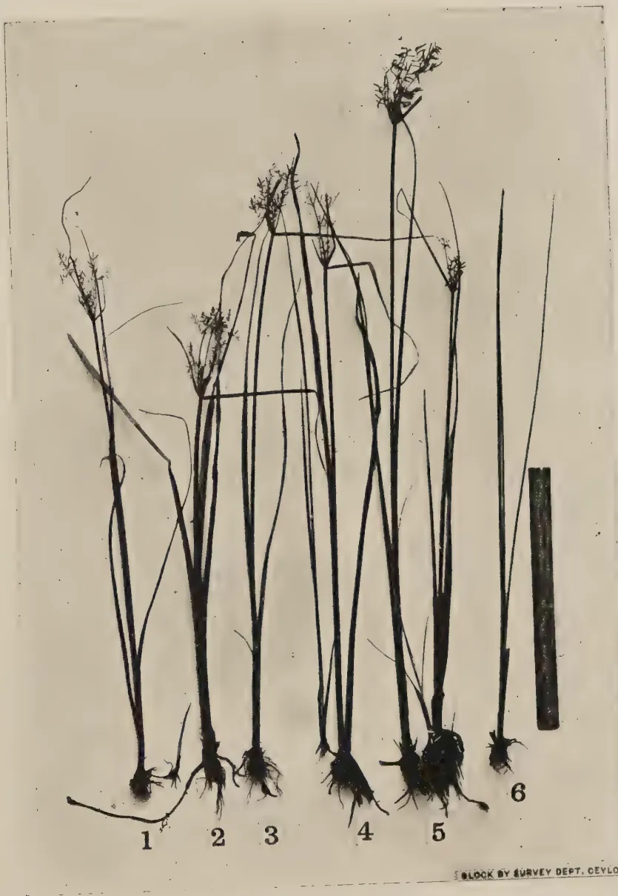
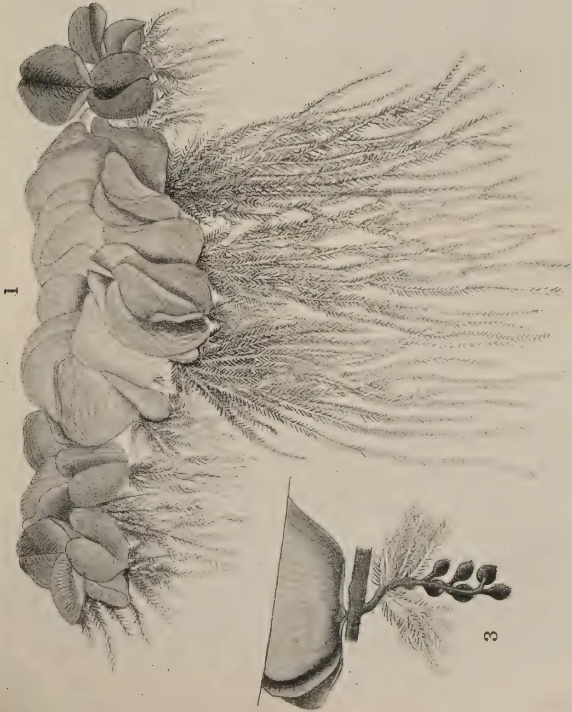
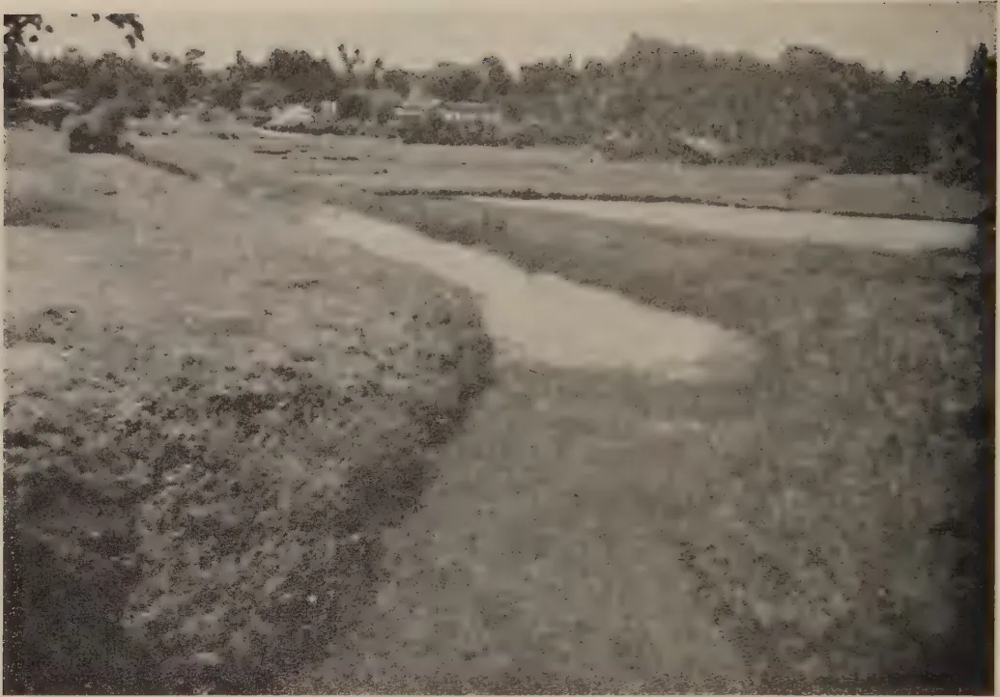
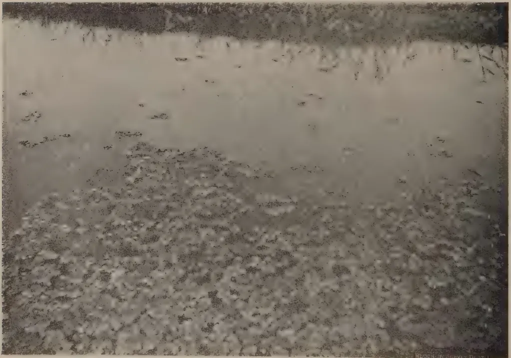
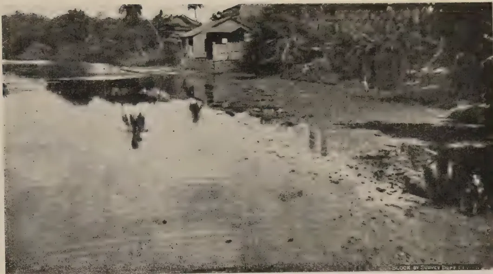
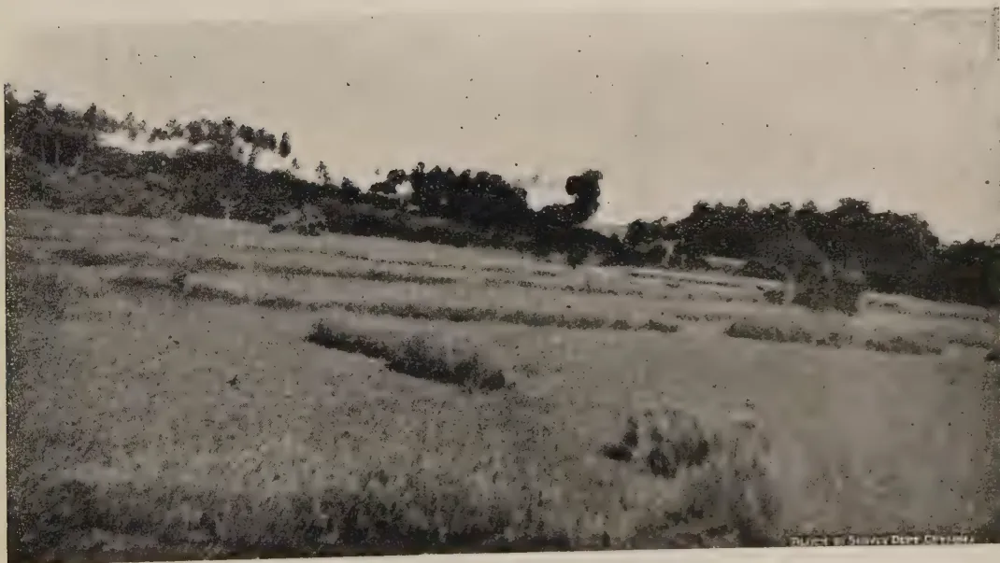

Plates illustrating the original article “Salvinia Auriculata Aublet” appearing in Vol. XCIX. No. 3, July to September, 1943.
Two line drawings illustrating this note will be issued with the next number.
VOL. XCIX.
PERADENIYA, OCTOBER-DECEMBER, 1943.
No. 4.
| Page | |
|---|---|
| Editorial .. .. . | 201 |
| Ceylon Estate Copra, Part II., No. 2 and No. 3 Grades of Copra. By Reginald Child, B.Sc., Ph.D. (Lond.), F.I.C., and Wilfred R. N. Nathanael, B.Sc. (Lond.) .. .. | 203 |
| Panicum Miliaceum (Meneri). A promising short-aged Food Crop. By J. S. L. White.. | 207 |
| Cyperus Procerus Rottboell. An indigenous plant liable to be a troublesome weed of paddy lands. By J. E. Senaratna, B.Sc. (Lond.), F.L.S. .. .. | 212 |
| Progress of Balsa Cultivation in Ceylon .. .. . | 214 |
| Red Onions or Shallot, Onions and Garlic .. .. . | 218 |
| The Scope and Function of Plant Protection Legislation in Ceylon with Special Reference to Insect Pests .. .. . | 221 |
| Food Production .. .. . | 231 |
| Minutes of the 67th Meeting of the Rubber Research Board held on October 18, 1943 .. | 257 |
| Minutes of a Meeting of the Board of the Tea Research Institute held on November 26, 1943 .. .. . | 260 |
| Minutes of the 68th Meeting of the Rubber Research Board held on December 9, 1943 .. | 263 |
| Minutes of the 65th Meeting of the Board of Management, Coconut Research Scheme, held on December 20, 1943 .. .. . | 265 |
| Animal Disease Return for the month ended December, 1943 .. .. | 267 |
| Meteorological Reports for October to December, 1943. .. .. | 268-270 |
1—J. N. A 33878 (1/44)
[Faint page: no legible print of its own could be verified; text withheld (stage 4 review list)]
The
Tropical Agriculturist
OCTOBER TO DECEMBER, 1943
EDITORIAL
CATTLE ON COCONUT ESTATES
IT is a common practice to keep cattle on coconut estates in the expectation that the excreta of these animals will serve as manure for the coconut trees. The ideas which land owners entertain with regard to the value of this practice are sometimes unsound and often exaggerated. It would be instructive to examine the limits of its usefulness.
A basic fact, which, though axiomatic, can nevertheless bear repetition, is that the cow may convert but not create matter. All the material that goes to build up its body, gives it energy, or is evacuated as waste must be absorbed in the first instance as food. If all its excreta and other forms of body waste during the whole of its life as well as its carcase after death are incorporated in the soil, that soil cannot receive more manurial ingredients, minerals, nitrogen, humus, and other soil building and soil fertilizing matter than it takes in as food, but it may receive less. For instance, some nitrogen is necessarily lost in the digestive process and in the collection and application of the excreta. Therefore a cow that feeds only on the herbage growing in an estate cannot give back to the soil of that estate more than it would receive from the natural decay of that herbage; and if the cow is sold or is taken outside to die there would be definite depletion of the soil, particularly in phosphoric acid, potash, and essential minerals.
It would, however, be incorrect to assume that the estate derives no incidental advantages from the keeping of cattle in these conditions. In the first place the cow transforms vegetable matter into easily assimilable plant food much more quickly than the natural process of decay so that there will be a quick turnover of the limited amount of manurial capital Ceylon soils contain. This is a factor of some value though not of such great value in the case of the coconut tree which has about seventy-five years of life as it would be in the case of seasonal crops. In the second place cattle may produce an actual increase in the nitrogen content of the soil. Soils are being continuously enriched by the fixation of atmospheric nitrogen. This is effected by the action of the nitrogen fixing bacteria, technically known as azoto-bacter. Azoto-bacter function in the presence of organic matter and draw their energy from the carbon which is released by the decomposition of organic matter. Cattle excreta are probably a more favourable medium for their intensive activity and therefore for the fixation of atmospheric nitrogen than decaying vegetation. These are the very narrow limits within which cattle which feed by grazing alone can be beneficial to an estate; and when
202this type of animal husbandry is practised and the cattle are not left to die in the estate, it is very necessary to replace by artificial fertilizers the minerals which go with the carcase.
A different set of considerations apply when a substantial part of the food of the estate cattle comes from outside. The cattle convert this food into manure and, if the food is selected with sufficient regard to the minerals it contains, the cattle would undoubtedly enrich the soil. Cattle fed in this manner will command much higher prices in the market than the scrub cattle that live by grazing alone, and this difference in price added to the enrichment of the soil generally covers the cost of the food. Therefore we feel that we are justified in entering a plea for the replacement of the practice to which we referred at the beginning of this article, the practice of planned animal husbandry in which the roughage of estate vegetation is supplemented in the diet of the cattle by introduced foods.
203CEYLON ESTATE COPRA. PART II. No. 2 & No. 3
GRADES OF COPRA
BY
REGINALD CHILD, B.Sc., Ph.D. (Lond.), F.I.C.
DIRECTOR OF RESEARCH, COCONUT RESEARCH SCHEME
AND
WILFRED R. N. NATHANAEL, B.Sc. (Lond.),
TECHNICAL ASSISTANT TO THE TECHNOLOGICAL CHEMIST
IN this Journal (1937, Vol. LXXXVIII., pp. 137-149) we have previously reported analyses of 52 representative samples of Ceylon Estate No. 1 copra, 48 of which were received at regular intervals during 1935-1936 from seven estates in different parts of the Island. Four of the same estates have co-operated in sending samples of their No. 2 and No. 3 copra every two months during one year 1939-1940 and we now record analytical figures for these samples, obtained using the methods described in our former article.
The results are summarized in Tables I and II, in which the reference numbers of the estates correspond to those previously used.
Before we proceed to further discussion, it is necessary to make some reference to the manner in which copra is sorted and graded on estates.
No. 1 copra should consist of halves from well-seasoned, mature and ungerminated nuts; it should be well-dried and of good colour, free from dirt, stains and burnt marks; the halves should be of good shape and appearance. From the bulk of copra from the kiln after curing is completed, such No. 1 copra is sorted out. The remainder is usually given a further firing, after which a little more No. 1 may be separated and the rest is sorted into No. 2 and No. 3 grades.
No. 2 copra should be as well dried as No. 1, but may be somewhat discoloured as by smoke and other stains. It will include halves from somewhat immature nuts or slightly germinated nuts. Into No. 3 go badly discoloured halves, soft leathery halves from very immature nuts and thin cups with shrivelled surfaces derived from germinated nuts. It may be added that very black, charred and perishing pieces should not be included even in No. 3—see note on Refuse Copra below.
For tables I and II see page 203
We have obtained in the cases of three estates the respective percentages of the various grades obtained by sorting in, more or less, the above fashion. These are shown in Table III.
Table III.| Estate No. 3. N.-W. P. | Estate No. 5. N.-W. P. | Estate No. 6. S. P. | |||||||||
|---|---|---|---|---|---|---|---|---|---|---|---|
| Date | % No. 1 |
% No. 2 |
% No. 3 |
Date | % No. 1 |
% No. 2 |
% No. 3 |
Date | % No. 1 |
% No. 2 |
% No. 3 |
| 16. 1. 40.. | 87.8 .. | 8.5 .. | 3.7 | 18. 11. 39.. | 86.1 .. | 9.9 .. | 4.0 | 15. 1. 40.. | 94.1 .. | 4.5 .. | 1.4 |
| 28. 3. 40.. | 88.4 .. | 8.4 .. | 3.2 | 18. 1. 40.. | 87.5 .. | 9.1 .. | 3.4 | 4. 3. 40.. | 94.9 .. | 3.2 .. | 1.9 |
| 11. 5. 40.. | 86.6 .. | 9.5 .. | 3.9 | 18. 3. 40.. | 87.8 .. | 7.3 .. | 4.9 | 14. 5. 40.. | 96.5 .. | 2.0 .. | 1.5 |
| 16. 7. 40.. | 84.2 .. | 12.9 .. | 2.9 | 18. 5. 40.. | 70.8 .. | 19.5 .. | 9.7 | 1. 8. 40.. | 96.8 .. | 2.1 .. | 1.1 |
| 24. 9. 40.. | 85.2 .. | 11.9 .. | 2.9 | 17. 7. 40.. | 62.7 .. | 29.6 .. | 7.7 | 23. 9. 40.. | 97.2 .. | 1.8 .. | 1.0 |
| 22. 11. 40.. | 82.0 .. | 14.5 .. | 3.5 | 28. 9. 40.. | 89.0 .. | 8.1 .. | 3.0 | 20. 11. 40.. | 97.4 .. | 1.4 .. | 1.2 |
204
ANALYSES OF No. 2 AND No. 3 ESTATE COPRA 1940-1941
Table I.—No. 2 Copra
| No. of Estate. | Province | No. of Samples | % Moisture. | % Oil. | % Oil (Dry Wt.) | Free Fatty Acid (extracted oil) | Free Fatty Acid (pressed oil) | ||||||||||
|---|---|---|---|---|---|---|---|---|---|---|---|---|---|---|---|---|---|
| Max. | Min. | Avg. | Max. | Min. | Avg. | Max. | Min. | Avg. | Max. | Min. | Avg. | Max. | Min. | Avg. | |||
| 3 | N. W. P. | 6 | 8.2 | 4.2 | 6.3 | 68.1 | 63.6 | 65.7 | 71.1 | 69.0 | 70.2 | 0.66 | 0.04 | 0.22 | 0.86 | 0.04 | 0.32 |
| 5 | N. W. P. | 6 | 8.1 | 4.3 | 6.1 | 68.9 | 62.5 | 66.1 | 72.6 | 67.7 | 70.3 | 0.40 | 0.06 | 0.16 | 0.40 | 0.04 | 0.22 |
| 6 | S. P. | 6 | 6.9 | 5.2 | 6.0 | 67.7 | 65.2 | 67.0 | 72.5 | 70.0 | 71.1 | 0.52 | 0.02 | 0.22 | 1.76 | 0.04 | 0.49 |
| 7 | N. W. P. | 6 | 8.5 | 5.2 | 6.9 | 66.7 | 63.4 | 64.7 | 70.4 | 68.9 | 69.5 | 0.23 | 0.04 | 0.18 | 0.58 | 0.04 | 0.22 |
| Total | 8.5 | 4.2 | 6.4 | 68.9 | 62.5 | 65.9 | 72.6 | 67.7 | 70.3 | 0.66 | 0.02 | 0.20 | 1.76 | 0.04 | 0.31 | ||
Table II.—No. 3 Copra
| No. of Estate | Province | No. of Samples | % Moisture | % Oil | % Oil (Dry Wt.) | Free Fatty Acid (Extracted oil) | Free Fatty Acid (pressed oil) | ||||||||||
|---|---|---|---|---|---|---|---|---|---|---|---|---|---|---|---|---|---|
| Max. | Min. | Avg. | Max. | Min. | Avg. | Max. | Min. | Avg. | Max. | Min. | Avg. | Max. | Min. | Avg. | |||
| 3 | N. W. P. | 6 | 8.9 | 4.3 | 6.6 | 67.5 | 61.9 | 63.9 | 70.5 | 66.7 | 68.5 | 0.95 | 0.12 | 0.39 | 0.97 | 0.28 | 0.55 |
| 5 | N. W. P. | 6 | 7.4 | 4.0 | 6.2 | 66.4 | 61.7 | 64.5 | 70.6 | 66.2 | 68.8 | 0.65 | 0.18 | 0.41 | 1.05 | 0.15 | 0.65 |
| 6 | S. P. | 6 | 7.1 | 4.8 | 6.0 | 69.2 | 64.7 | 67.1 | 72.7 | 69.3 | 71.4 | 0.57 | 0.19 | 0.39 | 1.33 | 0.24 | 0.76 |
| 7 | N. W. P. | 6 | 9.4 | 5.4 | 7.1 | 66.4 | 61.7 | 63.4 | 70.2 | 66.2 | 68.2 | 0.99 | 0.08 | 0.28 | 1.17 | 0.18 | 0.46 |
| Total | 9.4 | 4.0 | 6.5 | 69.2 | 61.7 | 64.7 | 72.3 | 66.2 | 69.2 | 0.95 | 0.08 | 0.37 | 1.33 | 0.18 | 0.60 | ||
On Bandirippuwa estate, Lunuwila, N.-W. P., the experiment station of the Coconut Research Scheme, the overall average sorting figures for 1938 were : No. 1 Copra, 94.5, No. 2, 4.5, No. 3, 0.7 per cent.
Apart from the efficiency of the kiln and the skill of the curers, factors influencing the proportion of the inferior grades are droughts, which lead to immature nut-fall, wet weather during curing and delay in curing leading to increased germinations. The first two factors, for example, account for the abnormal July, 1940, figures of Estate No. 5. It also appears that there is considerable variation in estate sorting practice.
With regard to the analytical results, it is not altogether surprising that the oil percentages of the inferior grades are on the whole higher than that of No. 1 copra. Several factors may contribute to this. It has been shown by Cooke (1) that long continued drying tends to decompose slightly and decrease the weight of the constituents of copra other than oil without affecting the oil itself. The percentage of oil in the finished copra is thus increased. No. 2 and No. 3 copra has usually been dried longer than the first-selected No. 1.
It has also been demonstrated by Cooke that an oil gradient is to be found in coconut meat when sliced tangentially (parallel to the paring). The slice least rich in oil is on the inside, the oil percentage increasing as the testa is approached. Thus if the copra is attacked by mould or bacterial action, the tendency is for the removal of the inside tissues least rich in oil, and Cooke records that copra into which mould had penetrated to almost one half the thickness had an oil content of 73.7 per cent. Similarly in germination these inside layers are removed and it has been found by Child and Pieris (2) that copra from well germinated nuts may show an oil content as high as 76.2 per cent.
Inferior grades and deteriorated copra, in fact, generally show high oil percentages, though the acidities of the oils may be high.
That, in the present study, the average oil content of No. 3 copra is somewhat lower than that of No. 2 (though not lower than that of No. 1) is probably to be explained by the inclusion, in this grade, of copra from very immature nuts. The slightly immature kernels which go into No. 2 have oil contents not very different from that of ripe nuts, but the oil content of very immature kernels is much less. The increase due to the factors described above is thus offset to some degree.
That the present samples have been well dried (as indicated above) is clear from Tables I and II. In our previous article we noted a range of 4.5 to 8.9 per cent. moisture with an average of 6.8 per cent. for 52 samples of No. 1 copra. Table I records a range of 4.2-8.5 (average 6.4) for 24 samples of No. 2, and a range of 4.0-9.5 (average 6.5) for 24 samples of No. 3.
In the case of oils from fresh No. 1 copra, previously recorded, very few contained over 0.10 per cent. free fatty acid (as lauric). The acidities of the oils from No. 2 and No. 3 copra are naturally higher, but not unduly so ; of the 24 samples pressed from No. 2 copra, only one, and of the 24 samples pressed from No. 3 copra, only 5, had free acidities of over 1.0 per cent. (as lauric).
It is apparent therefore that there can be little objection to the use of these grades for local milling on the grounds of oil content or quality.
206Rubberiness is regarded as a fault, however, since it is stated that rubbery copra chokes machinery and is difficult to press effectively. In practice No. 2 copra and even No. 3 is bulked with No. 1 for crushing locally. Inferior grades are more liable to deterioration and are consequently undesirable for shipment.
Refuse Copra.—It may be remarked that both this and our previous article refer to good estate practice. Some parcels of No. 3 copra which appear in the Colombo Sales Room include quantities of perished material derived from rotten nuts (e.g., those cracked in the storage heaps), and badly burned pieces. One such sample referred to us by the Ceylon Coconut Board, whilst having a normal oil content (69.3 per cent. of dry weight), gave an oil with a free fatty acid of 9.0 per cent. (as lauric). This oil would have given a loss on refining of about 20 per cent. by weight, and in addition the poonac would not have been saleable except as fertilizer. Such copra should, as stated earlier in this article, be classed separately as "refuse copra".
1. Analyses are reported on 24 samples of No. 2 copra, and 24 samples of No. 3 copra, received at regular intervals over a period of a year from four estates.
2. The results indicate that the samples contain on the average slightly higher oil percentages than Estate No. 1 copra, and that the acidities of the oils are not unduly high. Their physical nature is the only objection to their use for milling, and their greater tendency to deterioration by moulds, an objection to their overseas shipment.
Cordial acknowledgements are due to the Estate Proprietors and Superintendents who were good enough to co-operate by sending the samples and information referred to in this article.
J. S. L. WHITE,
AGRICULTURAL INSTRUCTOR, GAMPOLA
PANICUM miliaceum Linn., Panicum millet or the common millet, (S. kansa meneri or ma-meneri) proved to be one of the shortest-aged cereals known in Ceylon when it was tried for the first time at the Experiment Station, Pelwehera, during the yala season, 1942. It also proved to be a high yielder, the yield being very good for such a short-aged crop. This millet should not be confused with Panicum miliare or little millet, (S. heen meneri), which takes about months to mature and whose grain is much smaller: the writer when speaking of meneri in this article refers to Panicum miliaceum.
Panicum miliaceum is a native of Egypt and Arabia. It is cultivated in various parts of North-West India in the plains as a hot weather crop and even grows up to an elevation of 10,000 feet in the Himalayas. Judging from what the villager has to say, it was a favourite chena crop in the dry zone for the yala season as far back as seventy-five years ago. For some reason or other its cultivation diminished and frequent requests for seed were received, owing to its scarcity. It was with some difficulty, therefore, that the writer obtained some seed from a villager in his range for sowing in the Station for purposes of multiplication. From these multiplications a crop of 32,885 lbs. was secured in yala 1943 at the Pelwehera Experiment Station, while last year's crop, 1,000 lbs., has already been issued for sowing.
Meneri is relished as a food by the average villager, and there is a genuine chance of re-popularizing a crop that is not strange to Ceylon. Unlike new introductions such as Kambu, there will be no difficulty at all in spreading the cultivation.
Meneri is an erect plant growing to a height of about feet and is easily recognized by its bright green foliage and spikelets of flowers arranged in lax drooping panicles. Leaves are large and acuminate, and sheaths long and hairy. The panicle is much branched. Branches are slender, elongate, spreading, ultimately bending over from the weight of the grain. It tillers
208profusely, the average being about 10 tillers, and there are about 4 branches to each tiller. The grain is attractive, being oval with longitudinal streaks.
Meneri thrives best in sandy loam to loamy soils. Only light manuring is required. Judging from experience in India as well as experience at Pelwehera, it should thrive anywhere in Ceylon, if sown at the proper time, being less adversely affected by heavy rain than kurakkan. It is an excellent cereal crop for the yala season in the dry zone and is unique in this respect. The following are the rainfall data between sowing and harvesting time during yala 1942 :—
| April 4th | .. 0.96 | Sowing in the Experiment Station, Pelwehera |
| April 5th | .. 0.19 | |
| April 6th-13th | .. Nil | |
| April 14th | .. 0.15 | |
| April 15th | .. 0.21 | |
| April 16th | .. Nil | |
| April 17th | .. 1.12 | |
| April 18th | .. Nil | |
| April 19th | .. Nil | Sowing in a plot in the range |
| April 20th | .. Nil | |
| April 21st | .. 0.30 | |
| April 22nd | .. 0.19 | |
| April 23rd | .. 1.63 | |
| April 24th | .. 0.10 | |
| April 25th | .. 0.05 | |
| April 26th-30th | .. Nil | |
| May 1st-14th | .. Nil | |
| May 15th | .. 0.50 | |
| May 16th | .. 0.10 | |
| May 17th | .. 1.00 | |
| May 18th | .. 0.42 | |
| May 19th & 27th | .. Nil | |
| May 28th | .. 0.05 | |
| May 29th-31st | .. Nil | |
| June 1st-3rd | .. Nil | |
| June 4th | .. Nil | Harvesting in the Experiment Station, Pelwehera |
| June 5th-8th | .. Nil | |
| June 9th | .. 0.10 | |
| June 10th-16th | .. Nil | |
| June 17th | .. Nil | Harvesting in a plot in the range |
From the above it is observed that in the Experiment Station, Pelwehera, a total rainfall of 6.97 inches was sufficient to take the crop to successful maturity, while a successful crop was obtained in a plot in the range one mile away during a period when the rainfall was, according to the Station records, only 4.44 inches.
In the dry zone chena, the crop is broadcast for the yala season as a pure crop, the seed rate being 12 lb. per acre. At the Experiment Station, Pelwehera, it was sown for yala 1942 and 1943, with a three coultered seed drill in rows one foot apart and thinned out two weeks later to about 6 inches
209in the row. In 1942 it was sown as a pure crop while in 1943 it was mixed with green gram, three rows of meneri alternating with three rows of green gram. The latter method seems to be the more satisfactory one, the green gram coming to maturity about a week earlier than meneri. The seed rate was 8 lbs. per acre for the pure crop and 4 lbs. per acre for the mixed crop. The villager sows it thick—thicker than kurakkan—so that a spacing of 6 inches by 6 inches may give higher yields and may be worth trying. It thrives in a kanathu chena without manuring, but responds to manuring with compost. At the Experiment Station, Pelwehera, compost was applied at the rate of 3 tons per acre on land opened 5 years earlier and a crop of 22 bushels per acre was secured. Only one intercultivation is necessary, when the crop is about a month old. This is so because it is a quick-growing crop and smothers weeds. It is also interesting to note that it was tried as a late maha crop during 1942-43, sowing having been done early in January, and quite satisfactory yields were obtained.
The crop flowers in a month and is ready for harvesting two months after sowing. On poor land and under drier conditions it ripens even in seven weeks. Harvesting is done with sickles and the earheads are allowed to remain a day in the sun before stacking, as is done in the case of paddy. Threshing is easily done by trampling with cattle or buffaloes. On a small scale the grain is threshed by beating on logs. The average yield of grain per acre is about 20 bushels when sown under intensive cultivation, while under chena conditions the yield is about 10 to 15 bushels. This was the experience at Pelwehera. According to the villagers, however, a yield of 25 bushels per acre is not rare. In the Experiment Station, Pelwehera, an area of 2 th acres sown pure for yala 1942 gave a total yield of 41 bushels. This amounts to 20 bushels per acre. The yield would have been higher if not for the fact that there were about 25 per cent. vacancies which could not be filled for want of seed. In yala 1943 the same area sown with three rows of meneri and three rows of green gram alternately gave a yield of 22 bushels per acre, i.e., 11 bushels calculated on the whole area, while a 50-acre chena block yielded 12 bushels per acre. The yield in the chena was poor owing to uneven sowing. The bushel weight is 58 lbs. An acre produces about 1,750 lbs. straw which is relished by cattle. The fodder is said to be of excellent quality in the green state, while the straw too is valuable. Crawford in his article on fodder in the Tropical Agriculturist of October, 1941, says: "The straw is prized in the area where Ongole or Nellore cattle are reared. In that part it is said to be the only dry land cereal grown in the North-East Monsoon. This straw is said to give a soft and shining coat to the cattle. The husks of the meneri grain are used as cattle food. The fact that this straw is largely used for feeding such a noted breed of cattle as the Ongole would indicate that it is very nutritious".
This crop was not troubled by any pest or disease during the two seasons it was tried at Pelwehera.
210COST OF CULTIVATIONThe cost of cultivation of one acre meneri for yala 1942 at the Experiment Station, Pelwehera, is given below :—
| Description of Work. | Bullocks. | Men. | Women. | Total. | ||||
|---|---|---|---|---|---|---|---|---|
| Re. 1 per pair | .. | 72 Cts. | .. | 30 Cts. | .. | Rs. | c. | |
| Ploughing with ceres plough .. | 2 | .. | 4 | .. | — | .. | 4 | 88 |
| Cost of 3 tons compost .. | — | .. | — | .. | — | .. | 3 | 0 |
| Spreading compost .. | — | .. | — | .. | 2 | .. | 0 | 60 |
| Harrowing with disc harrow .. | 1 | .. | 1 | .. | — | .. | 1 | 72 |
| Harrowing with tooth harrow .. | .. | 1 | .. | — | .. | 1 | 22 | |
| Sowing with seed drill .. | .. | 1 | .. | — | .. | 1 | 22 | |
| Cost of 8 lb. seed .. | — | .. | — | .. | — | .. | 1 | 0 |
| Thinning out .. | — | .. | — | .. | 8 | .. | 2 | 40 |
| Intercultivating .. | — | .. | — | .. | 15 | .. | 4 | 50 |
| Harvesting .. | — | .. | — | .. | 16 | .. | 4 | 80 |
| Transporting to threshing floor .. | — | .. | — | .. | 9 | .. | 2 | 70 |
| Threshing .. | 4 | .. | 8 | .. | — | .. | 9 | 76 |
| Winnowing .. | — | .. | 3 | .. | — | .. | 2 | 16 |
| 39 | 96 | |||||||
Yield bushels @ Rs. 3 per bushel ..
Rs. 61.
Profit per acre ..
Rs. 21.04.
FOOD VALUE AND METHODS OF USING AS FOODThe Agricultural Chemist analysed a sample of this meneri rice and gave the following analysis. His analysis of polished rice, country rice and rice polishings are also given for comparison :—
| Meneri Rice. Per cent. |
Polished Rice. Per cent. |
Country Rice. Per cent. |
Rice Polishings. Per cent. |
|
|---|---|---|---|---|
| Moisture .. | 11.10 | 13.24 | 12.24 | 9.03 |
| Proteins .. | 13.71 | 6.31 | 7.44 | 11.91 |
| Carbohydrates .. | 72.26 | 78.14 | 77.28 | 36.22 |
| Ether extract (fat or oil) .. | 1.76 | 0.38 | 0.73 | 23.51 |
| Fibre .. | 0.10 | 0.33 | 0.33 | 9.21 |
| Ash .. | 1.07 | 1.60 | 0.98 | 10.12 |
Judging from these results meneri is richer in protein and fat than rice. Its protein content is amongst the highest of any grains. It is moreover easily digestible.
The advantage of growing meneri lies not only in its short age but also in the fact that all food preparations made with rice and rice flour can be made with meneri and meneri flour. The seed can be easily pounded into the grain both in the raw or parboiled state. It should not be boiled to the same extent as paddy is boiled, as over-boiling will result in a paste. If flour is required the raw grain should be soaked for about 8 hours and pounded. The percentage output of grain and flour from seed is as follows :—
16 measures seed—9 measures raw grain—12 measures flour.
The output is thus definitely greater than that from paddy.
Meneri 'rice' served with curries is very tasty indeed and so is the porridge prepared from the 'raw rice'. Meneri 'buriyani' is a delicacy. Besides the above, hoppers, string hoppers and all kinds of local sweetmeats can be prepared from meneri flour.
. 211CONCLUSIONThe writer is of opinion that there is no other grain so suitable as this short-aged meneri to be multiplied and encouraged for high land cultivation in the dry zone of Ceylon, especially for the yala season. Rains during the yala season in the dry zone of Ceylon are so uncertain that it is the shortest-aged crops that should be encouraged. Today hardly any food production is done on high land during the yala season in the dry zone. Thousands of acres are brought under gingelly which is longer-aged than this meneri. If one-half of these gingelly chenas were brought under meneri the food problem should be partly solved, with a food crop that is relished by the villagers and not strange to them.
212J. E. SENARATNA, B.Sc. (Lond.), F.L.S.,
ASSISTANT IN SYSTEMATIC BOTANY
CYPERUS PROCERUS Rottb. (Cyperaceae) is an indigenous plant liable to be a troublesome weed of paddy lands. A description of the plant, its distribution, economic significance, methods of reproduction and dispersal, and means of control are given.
Cyperus procerus Rottb. is an indigenous plant belonging to the sedge family (Cyperaceae). It is a common weed of paddy lands mostly in areas near the sea, particularly in the dry zone where it occurs also in tanks and swampy places.
It is a perennial grass-like plant which is propagated not only by seed but also by underground stems which are difficult to eradicate. It is a hardy plant which can live under water-logged conditions and also stand drought well. It is known as kokunarai (Tamil) in the Batticaloa District.
A perennial, erect herb with simple stems bearing leaves at the base of the stem; rootstock short, stout, bearing long, horizontal, underground stems or stolons generally ending in bulbils; stems stout, 3-4 feet high, triangular in cross-section, with the angles rough; leaves often longer than the stem, thick, leathery or spongy, triangular in cross-section, to inch broad, flattened towards base, acuminate at apex, with margins rough; leaf-sheaths broad, compressed, membranous; inflorescence a compound umbel, 3 to 6 inches in diameter; bracts 2 to 5, up to 12 inches long, much thinner than the leaves; primary rays 3 to 7, stout, 1 to 8 inches long; secondary rays bearing loosely corymbose spikes of 5 to 10 long, spreading, compressed spikelets; spikelets remote, linear to linear-oblong, to inches long, to inch broad, acute, each bearing 10 to 50 flowers, straw-coloured, or reddish, shining; glumes boat-shaped, to inch long; fruit a 3-sided nut, broadly obovoid, black.
The plant flowers mainly from October to March.
The plant has been recorded in Ceylon from Murunkan, Mupadichchenai, Anuradhapura, Batticaloa, Kurunegala, Dambulla, Colombo, Ambalantota and Tissamaharama.
The plant is found in the tropics of Asia and Australia.

BLOCK BY SURVEY DEPT. CEYLON
Cyperus procerus Rottb.
Plants with soil washed off to show underground parts.
Fig. 1-5 : Plants in flower and fruit ; Fig. 6 : Plant before flowering.
Note in : Fig. 1, young plant arising at end of stolon ;
Fig. 2, a long stolon ;
Fig. 3, an underground bulbil.
Fig. 4, 5, new shoots of various stages arising from rootstock.
( The scale shown is one foot long.)
[Faint page: no legible print of its own could be verified; text withheld (stage 4 review list)]
This image is a scan of a blank page. The paper has a light beige or cream-colored tint. There are a few very small, faint dark spots scattered across the surface, which appear to be scanning artifacts or dust particles. No text, lines, or other markings are present on the page. 213In paddy fields it grows in profusion covering ground which would otherwise carry paddy plants, and it competes with the cultivated crop for light, and nutrients from the soil. It is liable to be a troublesome weed in paddy fields.
Incidentally, in Java, the stems are used on a considerable scale as string (Heyne).
Propagation is by seed and by vegetative means. The weed is extremely prolific in seed production. A single inflorescence produces 2,000 to 7,000 seeds. Seeds are washed down by rain water or irrigation water to new localities. They may also be carried with mud sticking to the feet of men or animals or to implements. Seeds of the weed may be carried with mud on the feet of birds to long distances.
The rootstock produces (1) numerous, long, horizontal, underground stems or stolons which (a) directly give rise to aerial plants at some distance from the parent plant, or, (b) end in bulbils which give rise to aerial plants, or, sometimes, again to stolons, and (2) buds from which new aerial plants arise near the parent plant.
Cultural operations, such as ploughing, separate from the parent the stolons and bulbils which under favourable conditions give rise to new plants.
As the plant reproduces very freely from seed, flower-heads should be cut off as they appear, to prevent seeding. Concerted action by field-owners is necessary if the fields are to be kept free of the weed. One patch of weeds may infest all fields to which water flows from it or seed may be washed into an irrigation channel from which it is spread far and wide. For this reason, bunds and margins of fields, channels and tanks should be kept free of the weed. Seed paddy from infested fields may be contaminated with seeds of the weed, and clean seed should be sown.
Its method of propagation from underground stolons and bulbils renders it difficult to eradicate, and on small areas handweeding, removing all underground stolons and bulbils, is the only satisfactory method of dealing with the weed. On larger areas, where handweeding is impracticable, ploughing which breaks up the underground stems should be followed by flooding the fields for several days so as to completely rot the weed.
214DEPARTMENTAL AND OTHER NOTESPROGRESS OF Balsa CULTIVATION IN CEYLONT. H. PARSONS, F.L.S., F.R.H.S.,
CURATOR, ROYAL BOTANIC GARDENS, PERADENIYA
IT is only two years or so ago that real interest was raised in the subject of Balsa cultivation in this country, the interest being since stimulated by urgent requests from Australia for this wood and in the knowledge that a first class quality of wood can be grown here if given right conditions, and to the fact that a high quality wood will always find a remunerative market.
The history of the tree with a brief description of its uses was published in the Tropical Agriculturist, Vol. XCII., No. 1 of July, 1941. Since then a deal of additional information has been gained and experiments undertaken. For a new subject, extensive stocks have been raised and distributed, with a leaflet describing the plants cultural requirements and other points demanded for its successful cultivation.
From the date that new interest was shown in this subject of Balsa Wood all garden seed-bearing trees were utilised for raising stocks, and to date the seedlings in plant baskets disposed of have amounted to well over 12,000 together with a distribution of nearly five pounds of seed, one ounce of seed representing about 3,000 seed. This has however not been sufficient to meet the demand and many orders have had to be curtailed or refused.
It is difficult to estimate from these figures exactly what acreage there is in Balsa at the moment. The seed germinating percentage, for instance, is in all cases very poor, rarely more than fifteen and often as low as five per cent. A further percentage of the seedlings raised have doubtless been lost due to damping off, though this can be reduced by dustings with flowers of Sulphur and other means in the early stages. With the basketed plants a planting percentage of nearly one hundred can be secured if the plantation adjoins or is near the nursery, but if lengthy transport is involved losses again occur owing to the succulent and sappy nature of the seedling which bruises very easily and wilts away quickly. After the planting out of sound and healthy seedlings, however, all should be well, and growth should be rapid, but the necessity for an insecticidal spray for the first month or six weeks arises, during which period insects are attracted to them. Once having formed their rough leaves they fend for themselves.
Another factor in estimating acreage at the moment is the spacing of the plants. Some are planted 10 ft. by 10 ft. (435 to acre) some 15 ft. by 12 ft. (242 to acre) and some larger spacing than this. It seems, however, that 12 ft. by 15 ft. is likely to be the more economical in spacing, as figures given below indicate.
215The main point to bear in mind in Balsa planting is that if full returns are required the trees must produce very light wood, and that this is only obtained by quick growth under favourable conditions of ample moisture, a friable and loose soil and an elevation of under 2,000 feet.
The Council for Scientific and Industrial Research of Australia have recently stated that, "the lighter weight Balsa received in Australia, i.e., material below about 9 or 10 lb. per cubic foot, goes to the aeroplane factories while the heavier material, up to 15 lb. per cubic foot, is supplied to the Navy for floats". This can be taken to apply to Balsa Wood for all countries, and low density wood of 7 to 8 lb. per cubic foot will obviously be much more marketable than the heavier wood.
The fear that Balsa may be grown here under unsuitable conditions is a very real one and too much emphasis cannot be given to soil and moisture requirements. For this purpose a useful pamphlet including and particularly defining site conditions has been sent out with every consignment of plants or seed. It is these points that the figures of our trial plots given below are intended to elaborate in conjunction with spacing trials, for rapid growth is the essence of the whole matter. A good criterion to every grower in this respect, therefore, is to what extent his plantations at one year of age compare with the figures given of the garden trees of the same age. They should approximate to this height and girth if marketable light wood is to be secured at 5 to 6 years of age, and the produce to be to the estimated amount of 25 cubic feet per tree.
On October 6th, 1941, a batch of 100 four-month old seedlings were planted for trial purposes in the river bank of the Royal Botanic Gardens. The site is 20 feet above normal river level and consists of washed sand thrown up by the river at times of flood with a very small percentage of humus, since accumulated.
Holes 3 ft. by 3 ft. were excavated and in refilling 3 baskets of rotted cattle manure and 2 of normal garden soil was added. Growth was free and rapid from the start but caterpillar attacks being observed soon after planting out, weekly sprayings of Arsenate of Lead (one oz. in one gallon of water) were given each week for 4 weeks, after which the older and rougher leaves themselves combatted any attack. The planting distances of this batch was 10 ft. by 10 ft.
On October 6th, 1942, a second batch of four-month old seedlings, this time of 30 plants, were put out in an adjoining area of the same soil conditions and given the same preparations and other treatment as for the 1941 plantation. The planting distances of this second batch was however 12 ft. by 15 ft. as the purpose of this planting was particularly to compare advantage in height and girth, if any, due to the wider spacing. Atmospheric conditions during the first year's growth of each batch were remarkably alike. 100.22 inches of rain were recorded on 204 days during the period October, 1941, to September, 1942, and 103.15 inches on 205 days during October, 1942, to September, 1943.
The normal habit of the plant is to form a stout straight main stem of about 8 to 9 feet, at which height it branches into 3 stout angular lateral branches, one of which takes the lead whilst the other two remain as laterals. Subsequent growth is in sequence of such branching and the main stem
216sections between such branching varies from 5 to 6 feet to 7 or 8 feet according to whether the tree is grown individually or in close plantation.
With an idea of obtaining as much straight wood free from branch knots as possible, the trees in both batches were at the time the branch shoots were first perceptible, pruned back to one leading branch only. The results were not too successful for not more than a third of the plantation responded to this treatment by formation of an approximate straight stem as was expected of from 16 to 18 feet, the remainder showing a very decided kinked appearance with a top stem of semi-lateral type growing at various angles from the perpendicular. These latter are, however, slowly straightening and some may yet overcome the error of pruning back.
A third planting, this time of 60 four-month old seedlings, was therefore made on October 6th, 1943, under exactly the same conditions as the two former batches and these will be grown on untreated and allowed to take their natural shape. The planting distances of this batch is again 12 ft. by 15 ft. as for batch 2 and this close planting should, judging by past experience, encourage elongation of the main stem to 10 or 12 feet before first branching, with inter-branching growth of useful dimensions also.
Records of batches 1 and 2 are now set out and those of batch 3 will be recorded in due course, at one year of age and subsequently.
Plot 1.—Planted on October 6th, 1941, 100 plants 10 ft. by 10 ft. seedlings 4 months old and 6 inches in height.
| Height. | Girth at base. |
Girth at 3 feet. |
|
|---|---|---|---|
| Average on Oct. 6, 1942 (12 mns.) | .. 20'.4" | .. 1'.3" | .. 0'.11" |
| " " Jan. 6, 1943 (15 ,,) | .. 23'.0" | .. 1'.5" | .. 1'.1" |
| " " Apr. 6, 1943 (18 ,,) | .. 27'.9" | .. 1'.6" | .. 1'.3" |
| " " July 6, 1943 (21 ,,) | .. 28'.10" | .. 1'.8" | .. 1'.4" |
| " " Oct. 6, 1943 (24 ,,) | .. 34'.4" | .. 1'.9" | .. 1'.5" |
The tallest individual trees in this plantation on October 6, 1942, i.e., at one year of age were Nos. 51 and 52 with a height of 25 feet and that of the largest girth being tree No. 45 with a circumference of 1 ft. 1 in. at 3 feet from ground.
On October 6th, 1943, i.e., at two years of age the tallest specimens in the plantation were Nos. 34 and 36 with a height of 41 feet and the tree of largest girth was No. 1 with a circumference of 2 ft. 1 in. at 3 feet from ground.
Plot 2.—Planted on October 6th, 1942—30 plants 12 ft. by 15 ft., seedlings 4 months old and 6 inches high—
| Height. | Girth at base. |
Girth at 3 feet. |
|
|---|---|---|---|
| Average on Apr. 6, 1943 (6 mns.) | .. 8'.7" | .. 0'.8" | .. 0'.6" |
| " " July 6, 1943 (9 ,,) | .. 14'.10" | .. 1'.1" | .. 0'.10" |
| " " Oct. 6, 1943 (12 ,,) | .. 20'.10" | .. 1'.5" | .. 1'.2" |
The tallest individual tree in this plantation on October 6th, 1943, i.e., at one year of age was No. 18 with a height of 26 feet and the largest in girth at 3 feet from ground was No. 25 with a circumference of 1 ft. 6 in. at 3 feet from ground.
As soil and climatic conditions are so similar for the two plots the advantage of wider spacing in plot 2 (12 ft. by 15 ft.) over plot 1 (10 ft. by
21710 ft.) at one year of age is plainly indicated. This advantage to the plot No. 2 will in all probability be considerably enhanced in its second and subsequent years of growth.
Once again, therefore, the main considerations in Balsa cultivation are a proper selection of site with a light well drained sandy soil, secondly, suitable climatic conditions, and thirdly suitable spacing, and these requirements are again emphasised. Without such conditions one must expect a slower root formation with slower growth and a resultant heavier timber. Sites embodying these requirements are not easy to find and are generally found in narrow and elongated river bank strips. The volume of some orders received and the locality in which they are to be grown indicate that the grower is at present not giving sufficient attention to these needs.
Observations made from a few trees growing in and outside the gardens, in normal tea and rubber land soil, show that other than a light sandy soil is detrimental to any rapid growth and therefore lightness of timber. Individual trees in such a comparison are not a scientific test of course but they point the way.
Of the Gardens earlier planting made in 1931 in river bank (light sandy soil) and in Gardens Section D (heavy loamy soil), those in the river bank felled between June, 1941, and June, 1943, ranged from 7 ft. 6 in. to 9 ft. 1 in. in girth at base whilst the Section D tree has to date attained a girth at base of 5 ft. 8 in. only. This latter rate of growth and girth corresponds very approximately to that of isolated trees found elsewhere in the Island. It is too slow to produce any very light wood. A Balsa seedling planted in Section H of the gardens (in a fairly heavy soil) on December, 1940, has to date attained a girth circumference of 1 ft. in. only in the two year and 10 month period, and this seems normal under these conditions. Comparison of this plant with those in either of the river side plantations show the very appreciable advantage of a light sandy soil.
The experiments with Balsa to date certainly appear to warrant the conclusion that the required dimensions will be attained in the anticipated period of 5 to 6 years, the more so in that the garden river bank soil conditions are very poor in humus content.
At Pallekelly and at Wattegama seedlings put out in October, 1941, at the same time and of the same age as our own, but in a light sandy soil of more humus content, have in their largest specimens exceeded both height and girth of the largest plants in the garden plots.
Peradeniya, 13th November, 1943.
218BY
Mr. W. MOLEGODE
AGRICULTURAL OFFICER (PROPAGANDA)
THIS crop should be grown in an open situation free of heavy shade. It can be most successfully grown under irrigation in the dry zone and during both seasons in the moderately wet zones if timed so that the crop matures in dry weather. In fact it is at present grown almost throughout the year except in the very dry period of January–February and August–September.
The most suitable soil is a rich light moist soil of loose texture; but with proper drainage and an application of well rotted farm yard manure or compost most Ceylon soils will give a successful crop of Red Onions.
The soil should be dug to a depth of 4 or 5 inches and turned over. The manure is evenly applied at the rate of at least 10 tons per acre where available and is dug in and the soil is reduced to a tilth. Beds are now formed, levelled and beaten down to make them firm.
Propagation is by either seeds or seed bulbs. The former is economical as only 8 to 10 lbs. of seed are required to plant an acre. If seed bulbs are employed as much as 750 to 800 lbs. of bulbs will be required.
Mark out very shallow drills 6 inches apart on the beds. Sow the seed thinly in the drills and cover lightly and press down. In dry weather apply water regularly, using a can with a fine rose. In three weeks the plants will grow about 3 or 4 inches high. Then begin to thin out the plants in the drills leaving a plant 4 inches apart in the drill. The excess seedlings can be transplanted elsewhere. Before thinning out the plants, give a good watering and soften the soil to enable the seedlings to be removed without injury to the plants.
If the crop is to be raised by seed bulbs select medium sized bulbs. Cut off the apex of each bulb removing about a quarter of the bulb. This ensures even growth. Now plant in rows 6 inches apart placing a bulb 4 inches apart in the row and burying just deep enough so that the cut surface of the bulb be just above the soil or in level with the soil.
Weed and lightly cultivate the surface soil. It is important not to let the soil so dry during the growing stage.
Red Onions respond wonderfully to manuring. A top dressing of poultry manure or goat dung lightly forked in after 6 weeks of planting or a weak liquid manure will give excellent results.
When raised from seeds the crop takes from 4 to 4½ months to mature. If bulbs are planted the crop is ready in three months and irrigated crops may mature in less than three months.
219When bulbs are planted in 6 to 7 weeks immature bulbs and leaves can be utilised as a vegetable.
As the bulbs mature the leaves turn yellow wither and fall. Then the crop is lifted. The lifting should preferably be done in dry weather. After removing any adhering earth dry the bulbs and any remaining leaves under the shade for a few days so that the outer scales may dry. The roots and leaves are then removed and the bulbs are again dried by spreading them out in a well ventilated room till sufficiently dry. Properly dried Red Onions can be kept for three or four months.
The yield from seed is 50 to 60 cwts. per acre. From bulbs it may be anything from 8 to 25 fold.
The cultural methods and after treatment for onions are almost similar to those adopted for the Red Onions. But onions cannot be successfully raised in all parts of the country where the Red Onion succeed. Onions can be successfully grown only in the higher elevations where there is a cool and dry climate.
Prepare the soil as for the Red Onion. As bulb planting is costly it is advisable to grow from seed. Onion seed lose vitality soon. Secure a fresh supply of onion seed and raise seedlings in a nursery and transplant, or sow direct in drills varying from 9 to 12 inches apart according to the variety. When the plants are 3 to 4 inches apart them out in the rows to 6 to 9 inches apart. The seedlings removed can be transplanted.
Keep free of weeds and water when necessary. Stir the top soil on the surface and give an application of liquid manure. The under soil should be kept firm and compact.
Sometimes when the bulbs are fully developed the leaves are bent down to wither and hasten maturity.
After lifting dry the onions in the shade for a day or two. What may be done is to hang the onions in bunches in an airy situation and allow them to dry.
Allow some of the best plants to flower and run to seed.
Half an ounce of seed can be drilled in 100 feet.
Several types of onions are imported to Ceylon. Large and small red varieties, large and small whitish and yellowish types, large and small silvery white varieties.
Avoid growing onions on the same land too often.
Garlic can be successfully grown in the higher cooler elevations like Welimada, Palugama, Haputale, Obiya, parts of Walpane, Udahewaheta for the crop requires a cool moist period during growth and a relatively dry period during maturing of the crop. In the mid country garlic can be grown but the results are poor.
Prepare the soil as for onions. Form beds, reduce the surface soil to a fine tilth. Press down the soil.
220Garlic is propagated by means of the bulbils or cloves that make up a garlic bulb. The white membrane enclosing the bulbils or cloves must be first removed to separate the bulbils or cloves. They are then sorted. The long and slender ones should be rejected. It will be an advantage to plant in each bed cloves of uniform size so that they may mature evenly.
Planting should be in rows 9 inches apart placing individual cloves upright by lightly pressing with the soil with the apex just below to surface at 4 inches apart in the rows.
When the cloves start to grow the surface soil should be kept loose. Remove all weeds. Don't let the soil go dry. Lack of moisture in the soil will retard the development of the bulbs.
A top dressing of powdered cattle dung or an occasional application of weak liquid of fresh cattle dung will result in a considerable increase of the crop.
Garlic generally takes about four months to be ready for lifting but it may, if the conditions are unfavourable, take longer to mature.
When the leaves have turned yellow the crop is ready for lifting. After lifting remove any adhering soil and leave the bulbs to dry.
Sometimes the bulbs are dried with the leaves on, and are bound and hung in the kitchen.
221B. A. BAPTIST,
ENTOMOLOGIST.
WITHIN the scope of this subject, which is more popularly known as plant-quarantine, are included not only the legal restrictions on plants and plant products for the purpose of preventing the introduction of insect pests, diseases and weeds of foreign countries, but also the regulations designed to aid in the control, extermination, or eradication of established pests and diseases for purposes of protecting agricultural enterprise and preventing infestation of crops in free areas by dangerous pests and diseases.
In all agriculturally advanced countries there is a very well developed organization for the purpose of carrying on the necessary measures with regard to plant protection from insect pests and diseases, as this is a very important function with regard to the agricultural development and progress of any country. This importance can be better realized when the actual loss caused by pests is examined. The annual damage done by pests to agriculture, livestock and animal products in the Indian Empire was estimated to be in the neighbourhood of 1,800,000,000 rupees at the conference of Imperial Entomologists held in 1930. In America the annual loss entailed by one single insect pest, the cotton boll-weevil, is estimated at about 200,000,000 dollars.
In spite of such obvious losses, in the early days of agricultural development in this and other countries, plants and plant products were brought into or sent out of a country with little or no thought of the insect pests and diseases that might be transported along with them. In fact it is only within the last half century that any serious attempt at legislation to restrict the spread of insect pests, diseases and weeds or to otherwise control the damage caused by them has been attempted in any country. The importance of utilizing legislative measures in plant protection becomes evident when it is remembered firstly, that the worst pests in a country are generally the introduced pests; secondly, that many features concerning the handling of agricultural products are and have to be under the control of individuals who cannot be fully cognisant of the significance of the presence and dispersal of plant pests and diseases; thirdly, that very prompt and sometimes extensive measures have to be suddenly taken for the protection of crops and finally, that it is necessary for enforcing a co-operative effort with regard
222to crop protection amongst agriculturists who cannot realize the effectiveness of collective action or the far-reaching danger brought about by individual indifference.
In Ceylon the first plant-quarantine regulations date back to the Insect Pest and Quarantine Ordinance, No. 5 of 1901, under which the chief regulations were regarding the restriction of the importation of cocoa and pepper plants. In 1903 a fumigatorium for the disinfection of plants was built and subsequent regulations were issued for the compulsory inspection of all imported plants and planting material, as well as fruits of the citrus family imported for consumption. These regulations were constantly augmented and the Ordinance revised from time to time as new pests and diseases came into significance, both from the point of view of preventing the introduction of foreign pests and diseases, as well as controlling indigenous ones. The existing regulations are embodied in the latest revision of the Plant Protection Ordinance, No. 10 of 1924, which has replaced all the earlier Ordinances regarding plant protection, and is published in the Government Gazette No. 8,399 of September 30, 1938.
Plants as well as animals in a given natural area can be said to be practically in a stage of biological equilibrium. This refers to the characteristics and distribution of the plant species as well as to the occurrence of pests and diseases. Minor fluctuations and changes occur on account of weather and similar factors, but in any one place new pests and diseases do not normally suddenly appear as long as purely natural causes alone are in operation. In such cases susceptible types have been exterminated and the principle of the survival of the fittest firmly established. The agricultural activities of man, however, such as plant breeding and selection, the creation of new strains of plants, plant introduction and distribution of desirable varieties, transportation of living plants, cuttings, roots and tubers, introduce factors which can temporarily upset this biological equilibrium. It is, however, largely possible for man to take the necessary steps to prevent such upsets or detrimental effects following on the interaction of such factors and this is what plant-quarantine attempts to do.
There can be no question but that the feasibility of excluding pests and diseases of plants from free areas is dependent upon biological principles and that one aspect of the problem must consist of an examination of the fundamentals underlying the distribution and the dispersal of organisms. This again is dependent on a proper co-ordination of facts relating to the nature of the pests and diseases to be dealt with, their country of origin, their host relations, the native home of their host, their general prevalence, climatic relations, manner of spread and similar factors. To be sound, however, plant-quarantine should not only be reasonably probable of attainment from a biological stand-point but it should also be economically justified, and it should not unnecessarily restrict the rights and liberties of the people. It is only after a careful consideration of all these various aspects that it is possible to draw up a justifiable plant-quarantine and introduce it as a working system.
223Geographical Aspects.—The relative position and isolation of any particular land mass has a profound effect on its fauna and flora, and therefore particularly on the phytophagous fauna of the place. Ceylon, although an Island, is extremely close to the mainland of Asia and appears to have been connected with it until comparatively recent times. The general features of its insect fauna are therefore, where not identical, closely allied to those of India and South-eastern Asia, and there will be therefore relatively few insects of typical Asian origin which are altogether peculiar to Ceylon either in their presence or absence. Amongst these, however, there would be a large proportion of insects which are pests of comparatively recently developed or highly specialized economic crops, and many of these again may be physiological strains or races of comparatively generalized and widespread species, which are normally of negligible economic importance. Also, Ceylon being a relatively small Island, there exists the practicability of possible extermination of such specialized pests when they do occur, if attempts are made to do so before they have been able to firmly establish themselves.
Biological Aspects: Feeding Habits.—Plant-feeding insects are of greatly varied habits with regard to their nature and host plants. Some like the fruit-flies and seed-weevils attack exclusively the fruits or seeds. Others such as the shoot-borers and plant-sucking bugs though normally attacking the shoots may also attack the flowers and young fruits or pods. Others such as the leaf-eating caterpillars and the stem-borers confine their attention to those special aerial vegetative parts, while still others attack only the roots or tubers and are subterranean in some or all of their stages. The most important of all these pests from the point of view of dispersal are those which attack the final or agricultural product derived from the crop, which product is generally marketed and distributed; and those again which attack or may be associated with the reproductive parts such as tubers, bulbs and cuttings which are distributed for planting. There is also the question of host range, some insects being very specialized in their host preference and being confined to a single species of host plant, but more usually related species or even all genera of the same family may serve as hosts, while some are actually extremely cosmopolitan and attack widely separate host plants.
Resistance and Longevity.—Apart from the particular stage of the plant attacked a very important factor relating to dispersal is the relative resistance of a particular pest to lack of food and desiccation. In this respect the most important group of insects are the beetles, which, on account of a very well developed body protection, are capable of remaining for very long periods not only without feeding but also removed from their normal or natural environment. They can thus be transported by accidental association with commercial products connected with the crop plant or even with products not directly connected with the host crop concerned. Further, there are some insects which pass through relatively long inactive stages either in the egg, transitional or adult form. These stages are normally passed in some internal, inconspicuous or concealed situation and are frequently protected by a resistance which is a very great deal higher than that of the normal active insect.
General Habits.—Finally, dispersal is largely determined by general habits of locomotion and activity of the insects. Some species of insects are
224capable of flying long distances or may be capable of being carried by the wind over still greater distances. Others are limited largely to movements of their host plants upon which they feed and develop. On the whole, however, it may be said that the movement of insects by their own activities are very limited and in the case of an Island the problem of preventing the introduction of pests is largely one relating to human activity.
Plant Diseases.—With regard to the nature of diseases and their methods of dispersal all that need be stated here is that fungi and parasitic bacteria are specific organisms and, though microscopic in size, are just as definite in character and habits as ordinary plants and insects.
Weeds.—The prevention or destruction of plant weeds is another important aspect of plant protection which may be mentioned and has to be given very serious consideration in any plant-quarantine system, owing to the ease with which such weeds may be introduced and spread either by uninformed deliberate introduction or contamination with planting material and agricultural produce.
Economic Aspects.—The true purpose of quarantine is to avoid the undesirable economic consequences that result from the introduction and spread of various pests and diseases. An ideal plant-quarantine regulation would be one that excluded a plant pest with no costs of enforcement and with no interference with commerce or travel. Some plant-quarantine regulations approach this ideal. In framing regulations the cost of excluding by quarantine plant pests and diseases must be compared with the cost of controlling them if introduced. The cost to producers may be great or it may be practically nothing at all. If it is a pest that requires entirely different methods of control from those used for pests already present then the costs are greater. If controlled by the same methods as for existing pests the costs are practically nil. The same kind of analysis holds true for the cost of enforcing or maintaining plant-quarantine against specific pests. It is necessary then to balance the total costs of maintaining all of the quarantine regulations against all of the benefits derived from excluding possible pests and diseases. It must be remembered that many of the benefits derived from the exclusion of pests and diseases may be but intangible future probabilities and at the same time the regulations for enforcing them may impose much interference and additional duties with regard to the normal straightforward procedure in commerce and travel.
As naturally must be the case the administration of plant-quarantine is in the hands of the department directly concerned with crop development, namely, the Department of Agriculture. Quarantine is considerably simplified in a country like Ceylon on account of its being an Island and hence with effective physical barriers to pest migration and dispersal, and also on account of its relatively small size. The fundamental basis for the administration of plant-quarantine is the provision of facilities and personnel for the inspection of plants and plant products both growing in the Island and entering the Island from outside, and even leaving the Island. The latter is for the protection of countries to which plants or plant products from this
225country may be exported and from which this country expects similar guarantees. The other more or less complementary factor to inspection is the provision for destroying or otherwise dealing with pest infestation and pest epidemics.
Exclusion of Foreign Pests.—The field of action in this case is first confined to reasonable limits by a restriction of the points of entry of plants and plant products into the country, and the necessity for all such products coming within the range of examination of having to pass through a central inspecting organization, so placed as to cause the least possible inconvenience and delay. In the examination of planting material for insect pests it must be borne in mind that mere examination for superficially placed or attached insect stages will not suffice. The surface of the plant or planting material should be minutely examined for any break or disorganization or even discolouration on the surface. If any such is revealed the tissue must be carefully cut and examined for any internal or concealed stages of the pest. If any diseased or dying tissue is revealed such planting material must be rejected and destroyed irrespective of the presence or absence of specific organisms. It is further essential to examine minutely not only the planting material or plant product itself, but all accompanying material including especially soil and also the package material and wrappings of the consignment. A sound quarantine cannot ordinarily permit the passage of host plants or host plant material which originate in an infested area merely on condition that inspection fails to reveal infestation. Many plant feeding insects which are likely to be transported on nursery stock or fruit have certain stages which are inconspicuous or hidden and are therefore not easily detected. In certain cases inspection of every part of a plant, perhaps with a magnifying glass, would be required to enable an inspector to say positively that it is free from infestation. This is particularly true of scale insects which have a habit of hiding themselves beneath bud scales or bark. Many boring insects are detected only with great difficulty in their early stages, as is also true of fruit-infesting insects such as fruit-flies and seed-borers. Relatively few insects are so conspicuous when occurring on nursery stock, especially when in the egg stage which may be inserted within the plant tissue, that the inspection, necessarily cursory, given in connection with commercial shipments, is a reliable safeguard against infestation. In plant diseases a considerable time must usually elapse before conspicuous symptoms appear and from the quarantine standpoint it becomes quite impossible to inspect for such diseases. It is therefore necessary to completely cut off certain products from certain sources on account of the physical impossibility of excluding all risk of introduction in the case of certain pests and diseases, however great the care exercised in examination may be and however faithfully the principles involved in plant-quarantine are applied.
In the case of insect pests a proper fumigation treatment is very often adequate to get rid of such pests which may not be so readily detected by casual examination and completely adequate of course in getting rid of most insect infestation which can be seen and detected, thus affording a ready means of clearing such infested material and making it acceptable. Provision is therefore made for the exposure of such material to poisonous gases or fumigants, and at present Ceylon is well provided in this respect by a well
226equipped and staffed Fumigatorium in Colombo under the charge of the Agricultural Department, through which all plants and planting material imported into the Island must pass through for examination and treatment if necessary.
In order to ascertain for what particular foreign pests special provision should be made, it is necessary to examine the factors which would make such introduced pests serious. Among these are the significance of the pest in its native home; the countries in which it occurs and the relative geographical position of such countries; the amount of trade in plants and agricultural produce between this Island and such foreign countries; the relative uniformity of climate throughout the year in many agriculturally important areas of the Island; the presence of alternate and attractive host plants by which continuous rapid multiplication would be possible and the absence of insect and other enemies found in its original native habitat. The last two factors are very important ones in determining abundance and destructive potentialities of introduced pests of originally minor significance. Finally, there is the indirect importance of insect pests as possible vectors of plant diseases. In short the importance of a foreign pest from the point of view of quarantine would be based on the significance of its economic importance and the chances of migration and dispersal to Ceylon.
With regard to crops of major economic value in Ceylon the most important from the point of view of pests is Coconut. Among pests of this crop we have three of the most destructive already endemic in this Island. There are still, however, equally important ones such as the bearded weevil Rhina barbirostris L. and the rhinoceros beetles Strategus Spp. of the West Indies, which, however, lose much of their importance to Ceylon on account of their absence in any countries of the East. In India, fortunately, there are no coconut pests of major importance other than those present in Ceylon, but in Malaya there are four very important caterpillar pests which can be very destructive. These are the Coconut Nettle grub Setora nitens Walk., the Coconut Case caterpillar Mahasena corbetti Tams., the Coconut Spike caterpillar Tirathaba rufivena Walk., and the Zygaenid caterpillar Artona catoxantha Hamps. For the protection of this crop in Ceylon therefore the importation of coconut plants is completely banned from all countries, and coconuts in husk are allowed only through the Port of Colombo and allowed release only with a certificate of freedom from pest and disease. In this way all minor pests such as scale insects are also effectively excluded. With regard to the other major crops, Tea and Rubber, the restrictions that exist are related largely to the prevention of diseases, there being no pests of major economic importance which could be normally introduced.
With regard to Paddy which has now assumed a status of major economic importance, there are again no major pests of real significance which can be normally introduced. This is largely due to the fact that in the case of annuals such as paddy, which are planted from seed, no movement of actual plants will take place and no significant pests of the paddy plant are actually associated with the harvested seed. A certain amount of vigilance, however, is necessary with regard to introduction, through accidental association with straw, soil or other plants, of pests like the rice mealy bug Ripsia oryzae Gr. and the climbing cutworm Cirphis albistigma M. of India.
227With regard to minor economic crops of Ceylon which have, however, great potential significance, Cotton, Sugar cane, Tobacco and Citrus are worthy of special attention from the point of view of insect pests. Although cotton, like paddy, is planted from seed and actual plants are not therefore moved about, the boll or fruit with its contents the lint and seed are normal commercial products, and hence any pests which are likely to be associated with them have to be specially provided against. The principal pest in this connection is the notorious Mexican cotton boll weevil Anthonomus grandis Boh. now present in most cotton growing countries of the West. To eliminate risk of its introduction any seed, unginned cotton or raw ginned cotton of any species of Gossypium grown in the Western hemisphere, is not allowed into Ceylon except through Colombo and except from Bombay, or with a certificate of fumigation from the Collector of Customs, Bombay. Further in order to keep out Indian cotton pests such as the stem-boring weevil Pemphredon affinis Fst. fumigation at Colombo of all imported consignments of cotton seed or raw cotton is compulsory.
In the case of Sugar cane the only material which is imported are setts or pieces for planting, which can be of course an excellent channel for the introduction of numerous pests and diseases. Of the more important pests which can be introduced are the Sugar cane borers such as Diatraea saccharalis Fab. and Castnia licus Fab. (West Indies, &c.), and Diatraea sticticraspis Hmps., Diatraea venosata Wlk. and Scirpophaga nivella Fb. (India) and Sphenophorus (Rhabdocnemis) obscurus Boisd. (New Guinea, Hawaii, Fiji, Australia, &c.). There are also minor pests such as leafhoppers which can become serious if introduced, as was the case with the Hawaiian leafhopper Perkinsiella saccharida Kirk., an Australian species of minor importance which once nearly threatened the sugar industry in the Hawaiian Islands with extinction. To counteract all risk of introduction of pests and diseases of Sugar cane into Ceylon, therefore, the Ordinance provides that no sugar cane setts be imported into the Island, other than those imported by the Director of Agriculture, and thus an expert quarantine is necessarily observed for such material.
In the case of Tobacco no planting material except seed is normally imported and the chances of introduction of any serious insect pest are therefore negligible. The important pests of Tobacco which are absent from Ceylon are the Tobacco root bug Stibaropus tabulatus Sch. of India, and the Tobacco flea beetles Epitrix Spp. and the Tobacco bud worm Chloridea virescens Fabr. of America.
With regard to fruit the most serious foreign pest of importance to Ceylon is the Mediterranean fruit-fly Ceratitis capitata Wied., whose entry is safeguarded by the complete prohibition of the importation of fruit from all the Mediterranean countries, and also from other countries containing this pest unless treated according to a prescribed manner which ensures the death of any accidental infestation. The introduction of fruit pests in general is also safeguarded by the restriction of imported fruit to the port of Colombo alone, with the compulsory inspection and treatment to which all imported consignments of fruit have to be subjected. An important pest of Citrus plants absent from Ceylon but present in India is the Citrus Stem borer
228Chloridolum alcamene Thoms. Important foreign pests which are absent from Ceylon but whose chances of introduction are negligible are the San Jose scale Aspidiotus perniciosus Coms., the Japanese beetle Popillia japonica Newm., the Oriental fruit moth Laspeyresia molesta Busck and the Codling moth Carpocapsa pomonella L.
There are still a few pests which should be mentioned for the exclusion of which no special legislation yet exists but which may sooner or later require special measures. Such for instance are the Indian pests, the Red hairy caterpillar Amsacta albitriga Wlk., a cosmopolitan feeder on numerous food crops which has a dangerously long quiescent subterranean pupal stage, the Jak bud weevil Ochyromera artocarpi Motsch., the white borer of Coffee Xylotrechus quadripes Chev., and the pepper berry borer Longitarsus nigripennis Motsch. These and many others of relatively smaller importance are solely dependent for their exclusion on the care and sense of responsibility of the inspecting service maintained at Colombo for imported material.
Most of the pests, however, which are mentioned above as well as numerous others of smaller significance cannot be normally introduced except in or accompanying actual plants or planting material. Under the circumstances a quarantine administration which ensures the limitations of the avenues of entry to only one where a careful and responsible inspection service is maintained and enforced as is the case in Ceylon—since material coming in by train to Talaimannar and by air to Ratmalana are conveyed by sealed van to the Colombo Fumigatorium—is adequate within reasonable limits for keeping out any serious pests and diseases. This, however, should not engender any false sense of security, as any laxity entertained in formulating prohibitions against really important pests is fatal in the long run, as may be seen in the excellent example afforded by the Coffee berry borer Stephanoderes hampei Ferr., originally a native of Africa but probably introduced into Ceylon from Java. This pest was first recorded in Ceylon in 1935, at which time in fact it appeared to be fairly well established. It is very probable that it could have been kept out if the importation of coffee seeds had been rigorously excluded from all countries in which the pest occurred.
The Control of Indigenous Pests.—Apart from the provision mentioned for the examination of imported plant material the Plant Protection Ordinance also provides extensive power for control or eradication of established pests and diseases. Thus there is provision for the appointment of inspecting officers who are given the power of entering and examining any plants or any crop on any private property for the purpose of detecting plant pests and diseases and taking the necessary action with regard to their elimination. Of these pests the very serious or important ones are proclaimed and the owner or occupier is compelled by the alternative of fine or imprisonment to carry out the necessary eradication of such pests on his land in the manner specially prescribed. All technical officers on the staff of the Department of Agriculture are given the powers of inspection for pests and diseases with of course due protection of the rights of the owner of private property against the direction of these privileges against any feature other than that of pest and disease eradication.
Particular emphasis is of course placed on such pests and diseases as may be wont to spread rapidly and assume epidemic proportions as for
229instance the nettle grubs of Tea, as well as on those whose dispersal is very good and would normally by breeding in any one locality or estate cause serious damage to other estates and localities. Such for instance is the case of the two serious beetle pests of coconuts whose prevalence, multiplication and spread is entirely due to lack of sanitary attention on neglected coconut plantations.
The crop pests declared and proclaimed up to date in Ceylon are—(1) The Shot hole borer of Tea (Xyleborus fornicatus Eich.); (2) The Black Beetle of Coconuts (Oryctes rhinoceros L.); (3) The Red weevil of Coconuts (Rhynchophorus ferrugineus F.); (4) The Coconut caterpillar (Nephantis serinopa Meyr.); (5) The Root weevil of Plantains (Cosmopolites sordidus Germ.); (6) The Stem weevil of Plantains (Odoiporus longicollis Oliv.); (7) Nettle-grubs (Limacodidae); (8) The Coffee berry borer (Stephanoderes hampei Ferr.); (9) The Paddy pentatomid (Scotinophara lurida Burm.)
Comparing the plant protection legislation of various countries it will be seen that generally speaking there is very much less restriction on the movements of plants and plant products in Ceylon than is to be found in any agriculturally important country. The risk involved in this comparative freedom from the more tedious aspects of plant-quarantine is partly offset by the advantages derived on account of Ceylon being an Island and on account of the great care taken by the Agricultural Department in ensuring minute and responsible inspection at the port of introduction, and the cultivation of imported planting material under careful observation and control. Further the minor crops have not yet gained any appreciable economic significance and this is also largely the reason why comparatively few or no compulsory measures are laid down for the control of serious existing pests and diseases of these crops, or even for a crop such as paddy which has now acquired major importance.
It will be clear from what has been stated that a general tightening up of regulations and introduction of new ones relating to pest, disease and weed control will be very desirable if any intensification in the agricultural development of the Island is to be achieved. Little purpose, however, can be served by the mere introduction of new legislative measures, if the administrative machinery whereby they can be enforced is lacking. This is clearly seen in the case of the pests of coconut in Ceylon, where legislation is doing but little to keep these pests under control. It would be very desirable when conditions are more stable and definite and the economic significance of particular crops can be more clearly envisaged, that due emphasis be placed on this subject by the development and elaboration of scouting and survey work very necessary with regard to pest and disease control, so that the more effective and economical procedure of "prevention" can be exploited rather than the more troublesome and expensive "cure".
It is obvious that until the value of intensification of agricultural effort is fully realized it will not be possible for an agricultural country like Ceylon to achieve any substantial progress in agricultural development, nor will it be possible for an economic crop to make an appreciable contribution towards the wealth of the country. The history of agriculture in many
230countries has repeatedly shown that though pest and disease control are two of the most decisive factors in the intensive development of any economic crop, they have been in the past, the factors most frequently underestimated and overlooked. Further, it is also important to realize that to achieve effective pest and disease control it is necessary to win the understanding and co-operation of the agricultural public towards this most obvious side of the question, namely the legislative measures laid down for the achievement of pest and disease control in the country. A long term view is essential for properly evaluating this aspect and this can hardly be expected from the uneducated and hand-to-mouth agriculturist; but with the rapid progress now being made in the welfare of the peasant cultivator, this becomes a practical proposition. Complete success in pest control efforts can, however, only be finally achieved by the education of the agricultural public in the effectiveness of scientific method and co-operative effort, and last but not least the special duty and responsibility of the individual citizen and more particularly the agriculturist in this matter.
| Colonial Office Publication No. 141 (1937) |
A summary of Legislation relating to the introduction of Plants into the Colonial Dependencies of the British Empire as at the end of December, 1936 |
| Corbett, G. H. (1932) .. | Insects of Coconuts in Malaya. Dept. of Agric., S. S. & F. M. S, General Series, No. 10. |
| Dammerman, K. W. (1939) | Agricultural Zoology of the Malay Archipelago, Amsterdam |
| Hutson, J. C. (1939) .. | Plant Import Legislation in Ceylon. Tropical Agriculturist.. Vol. XCII. pp. 288-301 |
| Petch, T. (1913) .. | Diseases and Pest Legislation in Ceylon. Department of Agri- culture, Ceylon, Bulletin No. 6 |
| Ramakrishna Ayyar, T. V. (1940) |
Handbook of Economic Entomology for S. India, Madras |
| Wolcott, G. N. (1933) .. | Economic Entomology of the West Indies. San Juan |
THIS memorandum on Food Production was written in the year 1938 and is published because it is thought that it will interest our readers. It relates to pre-war conditions that formed the tail-end of an economic depression. Therefore estimates of expenditure for various purposes, and of receipts of income by sale of produce, as well as prices recommended for commodities, require considerable amendment. Ideas also have been modified by rapid changes under war conditions. But it is hoped that the memorandum will be interesting as a record of pre-war ideas and may assist in some measure those who are engaged in planning post-war reconstruction.
The Memorandum is in three parts :—
Rice equal to about 37 million bushels measured in terms of paddy and substantial quantities of other agricultural commodities used as food are annually imported to Ceylon. There are no means of calculating the volume of local production which, with the imports, makes up the total consumption of the Island. It is often asserted that about a third of the rice eaten in Ceylon is produced in the country, but no reliance can be placed on this estimate. There is, however, no doubt that the local contribution to our food supply falls much below the imported quota.
2. The local contribution is almost entirely the produce of peasant agriculture, nearly the whole of it grown for personal consumption. Neither the large nor the small capitalist is attracted to food production. People who either do not give adequate thought to the matter or are unwilling to face facts are often heard at school prize givings and other like places giving anything but the true and most obvious reason for this shyness of capital and this apparent absence of enterprise. They blame the system of education, the absence of vocational training, the cinema, failure to appreciate the dignity of labour, human perversity, anything but the true cause for the other man's not doing things which they would not dream of doing themselves. The true cause is that, with the known methods of cultivation and with the prices that obtain in the market, it is not possible to grow food with profits on a scale which may be regarded as reasonably adequate when the hazards of the undertaking, the distances of the areas which are still available for food production from the homes of the available labour, the prevalence of disease in those areas, and the necessary sacrifice of what Mr. Lucette aptly called the high standard of leisure common amongst the people are taken into account.
Perhaps an illustration by means of tangible figures will make this point clear. Suppose a middle class man, who has a son and wishes to set him up in life with a capital of about Rs. 15,000 turns to paddy cultivation as a good occupation for him. He buys 60 acres of land at Rs. 20 per acre under a tank in the dry zone. The following is an estimate of the capital
2—J. N. A 33873 (1/44)
232and recurrent expenditure on the farm, and of the receipts from it. The receipts are not based on the oft repeated very low figures of yield that are at present obtained in Ceylon, but on two annual seasons yielding 35 bushels and 25 bushels respectively per acre. It must be pointed out that this amounts to an annual yield per acre 50 per cent. above the corresponding figures for Java—a country of one of the most fertile soils in the tropics—and nearly double that of Burma which supplies us with most of our rice. But the experience of the Agricultural Department shows that with reasonably good cultivation this is not an extravagant figure to expect.
Estimate for a 40-acre Colonists's Paddy Farm with 20 acres Fodder and Pasture Area.
| A. Capital Expenditure | Rs. | Rs. | ||
|---|---|---|---|---|
| Purchase price of land | .. | .. | 1,200 | |
| Opening. | ||||
| Felling and burning at Rs. 25 per acre | .. | .. | 1,000 | |
| Stumping Rs. 50 per acre | .. | .. | ~ 2,000 | |
| Bunds (10 chains per acre at Rs. 2.50 per chain), i.e., Rs. 25 per acre | .. | .. | 1,000 | |
| Asswedumizing at Rs. 25 per acre | .. | .. | 1,000 | |
| Channels (3 ft. by 1½ ft.) ¼ mile at Rs. 120 per mile (Re. 1.50 per chain) | .. | .. | 30 | |
| Fencing Rs. 15 per acre | .. | .. | 600 | |
| Roads (¼ mile gravel cart road at 1,000 per mile) | .. | .. | 250 | |
| 5,880 | ||||
| Implements, | ||||
| Animals, &c. : | ||||
| Ploughs : 10 light iron at Rs. 5 | .. | .. | 50 | |
| Harrows : Burmese 4 at Rs. 3 | .. | .. | 12 | |
| Mammoties : 40 at Re. 1.50 | .. | .. | 60 | |
| Alavangoes : 12 at Rs. 2.50 | .. | .. | 30 | |
| Katties : 6 at Re. 1 | .. | .. | 6 | |
| Harvesting knives : 40 at 60 cts. | .. | .. | 24 | |
| Mats : "Magals" 3 at Rs. 5 | .. | .. | 15 | |
| Store baskets : (bamboo) 16 at Rs. 10 (each 25 bushels cap.) | .. | .. | 160 | |
| Levelling boards : 2 at Rs. 2 | .. | .. | 4 | |
| Yokes : 10 at Re. 1 | .. | .. | 10 | |
| Hand winnows : 20 at 35 cts. | .. | .. | 7 | |
| Hand levellers : 10 at 50 cts. | .. | .. | 5 | |
| Buckets : 6 at Re. 1 | .. | .. | 6 | |
| Gunny bags : 60 at 15 cts. | .. | .. | 9 | |
| Measures : 1 set | .. | .. | 10 | |
| Guns : 1 | .. | .. | 30 | |
| Lanterns : 4 at Rs. 2 | .. | .. | 8 | |
| Buffaloes : 8 pairs at Rs. 60 | .. | .. | 480 | |
| Carts : 2 at Rs. 75 | .. | .. | 150 | |
| 1,076 | ||||
| Buildings, &c.— | ||||
| House (wattle and daub) | .. | .. | 1,500 | |
| Labour lines for 5 families (wattle and daub) 1 set of 5 rooms at Rs. 250 each | .. | .. | 250 | |
| Latrines (pit) for labour : 1 set of 2 at Rs. 25 per set | .. | .. | 25 | |
| Store for implements and manures | .. | .. | 50 | |
| Well : 1 at Rs. 250 | .. | .. | 250 | |
| Threshing and dry floor | .. | .. | 25 | |
| Paddy store shed | .. | .. | 30 | |
| 2,130 | ||||
| Incidentals—Contingencies, transport | .. | .. | 114 | |
| 10,400 | ||||
| Paddock area : | Rs. | Rs. | |
|---|---|---|---|
| 15 acres | Selective felling and burning at Rs. 40 per acre .. | 600 | |
| Fodder grass area : | |||
| 5 acres | Felling and burning at Rs. 25 .. | 125 | |
| Partial stumping at Rs. 25 .. | 125 | ||
| Planting .. | 35 | ||
| Channels ( mile) .. | 15 | ||
| Fencing 20 acres at Rs. 15 .. | 300 | ||
| Contingencies and transport .. | 50 | ||
| 1,250 | |||
| Cost of cultivation and harvesting on 2 crops per acre basis (including depreciation on animal and implements)— |
||
| (2 crops at Rs. 50 each or Rs. 100 per acre) | .. | 4,000 |
| Maintenance of roads, buildings and fences .. | .. | 300 |
| Depreciation on buildings and carts : 10 per cent. | .. | 200 |
| Labour : 5 labourers at Rs. 100 for 8 off months | .. | 500 |
| Water rate at Rs. 2 per acre .. | .. | 80 |
| 5,080 | ||
| Lease rent on 20 acres .. | .. | 20 |
| 20 |
For every 40 acres paddy farm, an area of 20 acres will be required in addition as a paddock and fodder grass area for buffaloes—
E.—Summary| Capital for 40 acre farm .. | .. | 10,400 |
| „ „ 20 acre paddock and grass area .. | .. | 1,250 |
| 11,650 | ||
| Maintenance—Farm .. | .. | 5,080 |
| „ Paddock area .. | .. | 20 |
| 5,100 |
| Value of 2,400 bushels of paddy at Re. 1 per bushel (the present price of paddy ex field in the dry zone) .. |
.. | 2,400* |
| Nett loss (annual loss) .. | .. | 2,700 |
* A small income may be obtained from goats, poultry, etc.
It must be remembered that the actual capital required is much higher than what is shown above as capital expenditure. There must be working capital which is represented by what is termed maintenance charges. Our parent must therefore set apart not Rs. 15,000 but nearly Rs. 18,000 for this venture. And what does the son get ? He lives in a Rs. 1,500 wattle and daub house in the malarial zone, and loses Rs. 2,700 annually. Whereas, if he took up a job as a Village Committee clerk on Rs. 25 per month in his own native village, and invested the capital sum of Rs. 18,000 in the per cent. loan at par, he would have earned per annum—
| Rs. | |
|---|---|
| Salary .. | 300 |
| Return on investment .. | 620 |
| Total .. | 920 |
It may be objected that Rs. 50 per acre per season is much more than what a private capitalist would spend on cultivation. That is probably so : but then he would not earn an annual return in paddy about double that of Burma and in a few years' time his soil would degenerate to a point at which the yield may not be 25 bushels per annum. The Rs. 50 provide
234for good ploughing, for the introduction of some organic matter and for the application of artificial fertilizers.
Or again suppose he takes to dry farming without irrigation in the dry zone. The following is a similar statement for such a farm of 50 acres.
Estimate for a 50-acre Middle Class Colonist's rotation Farm
| A.—Capital Expenditure | Rs. | Rs. | |
|---|---|---|---|
| Value of land | .. .. | .. | 1,000 |
| Opening— | |||
| Felling and burning at Rs. 25 per acre | .. .. | .. 1,250 | |
| Stumping and clearing at Rs. 65 per acre | .. .. | .. 3,250 | |
| Fencing at Rs. 15 per acre | .. .. | .. 750 | |
| Roads ( mile gravel road) at Rs. 1,200 per mile | .. .. | .. 400 | |
| Soil conservation at Rs. 20 per acre | .. .. | .. 1,000 | |
| Implements and animals, &c.— | 6,650 | ||
| Bullocks : 6 pairs at Rs. 120 | .. .. | .. 720 | |
| Ploughs : ceres 6 at Rs. 35.. | .. .. | .. 210 | |
| Harrows : (Disc) 1 at Rs. 150 | .. .. | .. 150 | |
| Cultivators : (Planet Junior) 2 at Rs. 40 | .. .. | .. 80 | |
| Hand hoe : 2 at Rs. 25 | .. .. | .. 50 | |
| Mammoth forks : 10 at Rs. 2.50 | .. .. | .. 25 | |
| Mammothies : 18 at Re. 1.50 | .. .. | .. 27 | |
| Rakes : 12 at Re. 1 | .. .. | .. 12 | |
| Katties : 6 at Re. 1 | .. .. | .. 6 | |
| Harvesting knives : 15 at 60 cts. | .. .. | .. 9 | |
| Pruning knives : 6 at Rs. 2 | .. .. | .. 12 | |
| Watering cans : 6 at Rs. 3 | .. .. | .. 18 | |
| Carts : 2 at Rs. 75 | .. .. | .. 150 | |
| Alavangoes : 12 at Rs. 2.50 | .. .. | .. 30 | |
| Wheel barrows : 2 at Rs. 25 | .. .. | .. 50 | |
| Buckets : 12 at Re. 1 | .. .. | .. 12 | |
| Markers : 6 at 50 cts. | .. .. | .. 3 | |
| Sprayer (Vermorel) | .. .. | .. 50 | |
| Guns : 1 | .. .. | .. 30 | |
| Spring balance (to 100 lb.) | .. .. | .. 11 | |
| Yokes : 8 at Re. 1 | .. .. | .. 8 | |
| Measures : 1 set | .. .. | .. 10 | |
| Gunny bags : 100 at 15 cts. | .. .. | .. 15 | |
| Lanterns : 4 at Rs. 2 | .. .. | .. 8 | |
| Baskets : 20 at 50 cts. | .. .. | .. 10 | |
| Magals : 4 at Rs. 5 | .. .. | .. 20 | |
| Animal Husbandry— | 1,726 | ||
| Cows : 3 at Rs. 20 | .. .. | .. 60 | |
| Poultry : 10 country hens and 1 Rhode cock | .. .. | .. 20 | |
| Goats : 1 he and 5 she goats | .. .. | .. 65 | |
| Pigs : 1 pair (sucklings) | .. .. | .. 25 | |
| Buildings— | 170 | ||
| House (wattle and daub) | .. .. | .. 1,500 | |
| Labour lines (5 families) | .. .. | .. 250 | |
| Latrines (1 set) | .. .. | .. 25 | |
| Implements and manure store | .. .. | .. 50 | |
| Store for produce | .. .. | .. 100 | |
| Cattle shed | .. .. | .. 100 | |
| Wells 1 at Rs. 250 | .. .. | .. 250 | |
| Goat shed : 1 at Rs. 35 | .. .. | .. 35 | |
| Incidentals— | 2,310 | ||
| Contingencies and transport | .. .. | .. 144 | |
| 144 | |||
| 12,000 |
| B.—Maintenance. | Rs. | Rs. | |
|---|---|---|---|
| Depreciation on buildings and carts 10 per cent. | .. | 230 | |
| Maintenance of roads, buildings and fences | .. | 300 | |
| Lease of land | .. | 50 | |
| Cost of cultivation— | 580 | ||
| Chillies at Rs. 65 per acre .. | .. | 585 | |
| Kurakkan at Rs. 15 .. | .. | 135 | |
| Cotton at Rs. 35 .. | .. | 315 | |
| Grass : 1 man at Rs. 18 per mensem .. | .. | 216 | |
| Gingelly .. | .. | 108 | |
| Green gram at Rs. 5 .. | .. | 45 | |
| Plantains at Rs. 15 per acre (average) .. | .. | 15 | |
| Concentrates for cattle (12 head for 6 weeks working period at Re. 1 per week) and milking cows, &c. | .. | 100 | |
| Fertilizers, 18 acres at Rs. 10 per acre .. | .. | 180 | |
| 6 labourers for 3 months at 50 cts. per day .. | .. | 270 | 1,969 |
| 2,549 | |||
| C.—Returns | |||
|---|---|---|---|
| (At current market prices.) | |||
| Cotton : 5 cwt. per acre at Rs. 10 per cwt. .. | .. | 450 | |
| Chillies : 10 cwt. p.a. at Rs. 15 per cwt. .. | .. | 1,350 | |
| Kurakkan : at 25 b/a at Re. 1 per bushel .. | .. | 225 | |
| Gingelly : at 8 b/a at Rs. 3 per bushel .. | .. | 216 | |
| Green gram : at 6 b/1 at Rs. 3 per bushel .. | .. | 162 | |
| Cowpeas : 8 b/a at Re. 1 per bushel .. | .. | 72 | |
| Plantain : 1 acre 300 bunches at 33 cts. .. | .. | 100 | |
| Poultry (when flock increased to 100) .. | .. | 200 | |
| Fruits, &c. .. | .. | 50 | |
| Goats (reckoning on sale of 10 head p.a. at Rs. 8 each) | .. | 80 | |
| Milk (at 1 bottle per day per cow) .. | .. | 50 | |
| Pigs .. | .. | 30 | |
| 2,985 | |||
The rotation is as follows :—
M. 9 acres of Kurakkan or other cereal.
Y. 9 acres of Gingelly
M. 9 acres of Chillies
Y. 9 acres of Cowpeas
M. 9 acres of Cotton
Y. 9 acres of Green gram
M. 9 acres of Grass (for cutting).
Y. 9 acres of Grass
and 9 acres under grass for soil fertility maintenance.
27 acres rotation crops.
9 ,, fodder grass (for cutting).
9 ,, grass (soil fertility).
1 ,, plantains.
1 ,, homestead and fruits
1 ,, goats
1 ,, paddock
1 ,, poultry
50 ,,
E.—Summary.| Rs. | |
|---|---|
| Capital for 50 acres farm .. | 12,000 |
| Maintenance : per annum .. | 2,594 |
| Returns (less 10 per cent. for exigencies of season) .. | 2,687 |
| Profit .. | 93 |
These figures furnish the reason why under present conditions most good people do not go on the land themselves but censure others for not doing so.
3. In a consideration of the handicaps that condition rice production in Ceylon the water supply takes the first place. What is required is not so much an abundant water supply—that we have already—as a reasonably assured and regular water supply. In relation to this factor the country may be divided into four sections:—
In the first of these four sections the lands available for paddy cultivation have an adequate supply of water, which is obtained by the diversion of hill streams. It is perhaps possible to bring new areas of small size in this section under paddy by better planned use of these hill streams, but, generally speaking, most of the available land is at present utilized for purposes from which it cannot be withdrawn. It would be correct to say that apart from the improvement of the present forms of rather crude engineering adopted by the villagers there is no water problem in this section. While such possible improvements may be desirable for the betterment of the condition of small individual village communities they are of minor importance in a consideration of the problem of the food supply of Ceylon.
In the one monsoon section of the highlands there are still extensive areas which are not occupied and which are not reached by a reliable water supply. This is specially so in that part of the country which lies on either side of the Hakgala-Bandarawela road. The water resources of this area merit investigation with a view to the possibility of bringing the valleys and the lower slopes under paddy but here again any new lands brought under cultivation are not likely to add appreciably to the country's food supply.
The double monsoon area of the lowlands depends almost entirely on rainwater. Occasionally there are minor irrigation works such as the Batugedera channel or the Tinipitiwewa or the Kotugoda anicut but the acreage affected by such works is insignificant. The preponderantly greater part of the paddy lands of this section of the country are irrigated by direct rainwater which is controlled with varying degrees of efficiency by drainage channels, earth dams, bunds, and other minor works constructed from time to time by the peasants themselves. With the exception of small areas in the transitional regions to which reference will be made later, the water supply is abundant. The problem is not one of inadequacy of water, but of its excess and a certain degree of irregularity. The irregularity is not a factor which can be controlled by man, but in any survey of the position of the paddy industry it must be counted as a factor which limits production; for paddy cultivation cannot easily adapt itself to the changes of the seasons from year to year. It must work to a fixed seasonal programme, and if the rains come at the wrong time, as it often does, crops may be reduced or fail completely owing to delayed sowing, submergence by flood water at a stage of the plant's growth when it cannot survive submergence, or interference with the harvesting operations.
Excess of water is a disability of a different kind. It is not absolutely uncontrollable in the same sense that the volume and seasons of rainfall are uncontrollable. The problem involved is that of drainage and exclusion of flood waters from cultivated areas, and eventually resolves itself into a question whether in the case of each tract of land which is subject to a set of adverse conditions, the Government considers the benefits accruing to the country from the reclamation of the tract to justify the expenditure which is necessary to reclaim it. For example, it should not be physically impossible, although the expenditure involved may be very large, to render the large areas of paddy lands on either side of the Nilwalaganga suitable for regular cultivation by holding up in a large reservoir the drainage into the river of the rains that fall on the hills near the northern boundary of the Matara District, and by constructing a salt water excluding gate at the mouth of the river. But the State must decide whether the results contemplated would justify the effort.
In this connection the allied question of the liability of large areas near the sea to invasion by salt water may be mentioned. The present known varieties of paddy cannot stand up to brackish water. The Paddy Officer has in hand the search for a variety that would grow in mildly brackish water, or at least can suffer without injury the tidal flow of salt water. The statement was recently made that in French Indo-China varieties that are satisfactory in this respect have been evolved, and the Paddy Officer has been instructed to communicate on the
237subject with the Agricultural Institute of that country. But optimism with regard to the success of these investigations does not appear to be justified and agriculture must depend upon the engineer to exclude the salt water.
Reference was made above to what were called transitional areas, that is to say the belt of the wet zone which lies next to the dry zone and in which the intensity of the South-West Monsoon is not so great as in the wet zone proper. The southern half of the North-Western Province and the eastern portion of the Matara District are examples of this kind of land. In these areas the vagaries of rainfall make paddy cultivation a very precarious occupation indeed. The experience of the North-Western Province during the present year may be quoted in illustration. In this area the normal Maha crop is a 5 to 6 months variety of paddy, and the Yala crop a 3 to months variety. The North-East Monsoon of 1937/38 was not unfavourable to the growth of paddy and there was a very good stand in the fields in the early months of the year. Unusual rain in February and March interfered with the ripening and harvesting of the paddy, and a good portion of the crop was lost or spoiled. With considerable labour enough seed paddy was saved by the growers for sowing in Maha 1938-39. Encouraged by the early rains the field owners sowed an early maturing Yala crop in April. The South-West Monsoon failed, there was no rain in May and June, the growing paddy dried up and was used as dry fodder for cattle. When the time for Maha sowing came round in August no work could be done in the fields owing to the want of water, and the seed which was saved from the last Maha became useless as seed paddy. A few people, whose fields were favourably situated and who sowed their fields with the few mild showers of September, now—last week in October—see their paddy plants die, while the others may find that the rains do not come in time even for an early maturing crop.
In the single monsoon section paddy cultivation is carried out mainly under artificial irrigation, but the element of uncertainty is present only to a slightly lesser degree. The system consists of the collection within shallow basins, some large and others small, of the rain that falls within a limited catchment area or of the interception and collection in similar basins of the water that comes down seasonal and non-perennial streams. The adequacy of the water so collected depends entirely on the adequacy of the rainfall at the proper time. This again is a matter of very great uncertainty—so great that the peasant in the Wanni refuses to put mam-motty or buffalo to the field till his tank is full because, unless the tank fills adequately to carry him through to the time of harvest, his labour and the seed paddy would be wasted. Thus, although a large acreage has been assweddumized and is usually reckoned as paddy lands, the average yield stands very low because large areas can hope to mature and harvest an average crop only in seasons of particularly good rainfall—good both in its volume and in its distribution in relation to the established agricultural practices.
It would not be uninteresting to compare these conditions with those of countries like Java and Italy whose average paddy yields are often quoted as a reproach to Ceylon. The best way of describing the regularity and certainty of the water supplies of those countries is to refer to the practice of pisciculture which is carried on in conjunction with paddy cultivation. In Italy the rearing of Carp in paddy fields is a regular practice. The young fish are liberated in the rice fields after the water is admitted in March and are allowed to remain there until the water is drained off just prior to the harvest, when they are transferred to the basins specially dug for the purpose. They are re-transferred to the paddy fields in the next Spring when water is re-admitted. Three years of this seasonal migration are necessary to rear a fish fit for the market. The practice in Java is similar. This industry can be carried on only when the water supply is abundant, and there is no possibility of a failure. Measured by this standard Ceylon's water supply is quite inadequate.
4. The majority of our soils are deficient in organic matter and in the elements of nitrogen and phosphoric acid which are necessary for healthy plant life. The climatic conditions accentuate the deficiency of the first two. The virgin fertility of the soil is soon exhausted, and the farmer has to introduce the above constituents into his field. A certain amount of organic matter is available for application in the neighbourhood of the fields, but both nitrogen and phosphoric acid are too expensive for the farmer, even if he is advised by the Department of Agriculture that Ceylon soils give an economic response to the application of fertilizers.
Nor is the Department in a position to give definite advice on manuring based on conclusive trials. The Departmental Chemist has not been able to do anything more than discover the existence of the deficiency of the soils. The fixation of nitrogen in the soil so as to minimize loss through drainage and de-nitrification, the replacement of what is lost by cheap and
238practicable methods, the maintenance of a high percentage of bulky humus in the soil in the conditions of rapid decomposition that obtain in the tropics, the determination of the limits within which economic response can be obtained from paddy soils by the introduction of mineral mixtures and of the optimum mixtures suitable for different districts are problems which have been so far hardly touched. They require sustained investigation over a long period by a number of soil chemists.
The same question was discussed by the Royal Commission on Agriculture in India, and the Indian problems were found to be similar to ours—vide section 787 of the report of the Royal Commission. The Commissioners concluded as follows:—"We do not consider it advisable to make detailed recommendations regarding the expansion of the staff required for work on the problem the nature of which we have indicated above. Such expansion must depend on the extent to which funds are available and trained workers are forthcoming. There is in our view no direction in which the Council of Agricultural Research should be able to render greater service than in the promotion, guidance and co-ordination of research work on soils and soil conditions". The same conclusions apply to Ceylon.
In this connection, and in passing, the suggestion is made that it may be useful if some of the research branches of the Ceylon Department of Agriculture can in some way be affiliated to the Imperial Council of Agricultural Research. It is not clear how far this is practicable in the case of organizations under two Governments which are independent of each other, but it is a subject which may be usefully discussed between the Director of Agriculture and the Director of the Council.
5. There is another irremediable handicap from which the Ceylon rice industry suffers. The volume of grain that the plant yields must be determined by the amount of carbo-hydrates which it can manufacture by the assimilation of plant foods, and in as much as such assimilation takes place only in sunlight, the amount of sunlight available to the plant during its later growth, the flowering, and the ripening of the grain determines the yield of the paddy plant. The intensity of the sunlight is irrelevant. In fact after a certain point intensity may be harmful. A long duration of mild sunlight is more conducive to grain formation than shorter periods of intense light: so much so that in some countries the maturing period of paddy is stated not in terms of the number of days from planting to harvesting but by the number of hours of sunshine to which the plant is normally exposed during the same period. Two factors determine this number of the hours of sunshine: the distance from the equator and the liability of the sky to be overcast by clouds. The ideal conditions for high yields are:—
These are the conditions that obtain in the summer in countries like Italy, Spain, California and New South Wales, while Ceylon has neither of them. The main paddy season of the year has a maximum possible day of about eleven hours of sun or less, and during a considerable part of the season heavy clouds intercept the sunlight, so that the average daily sunshine during the season is not more than 8 hours and often as low as 4. Other things being equal Ceylon with its 4 to 8 hours of frequently interrupted sun cannot compete in grain production with the countries mentioned above with their 16 hours of practically uninterrupted sun. It is probably this cause which keeps down the average yield in Java when it has the advantages of an extremely fertile soil, very good irrigation, and an industrious population.
6. The unsuitability of the soil and climatic conditions for the cultivation of subsidiary crops in paddy lands in seasonal or yearly rotation militates against good agriculture both because the peasant is deprived of the opportunity of adding to his income and also because the soil does not have the benefit of the additional tilth or of the rejuvenating effects of rotation. Most paddy soils are heavy and have a high water-table. Paddy is about the only crop that can grow in these conditions in wet weather. With a very short period of transition such soils change into a hard non-friable pan which cannot be broken up by the ordinary animal-drawn implements. A regulated and perennial water supply and good drainage will make this change in the methods of agriculture possible, but there is little hope of securing these ideal conditions.
7. The system of land tenure and the law of inheritance leading to joint ownership, frequently in infinitesimal undivided shares, also militate against improvement. In the case
239of the land-lord who does not cultivate his own fields the terms of tenure are harsh. The land-lord incurs no capital expenditure either for the improvement or for the maintenance of the fertility of the soil; and the tenant whose tenure is not assured would not, even if he could, incur the expenditure required for these purposes. In most parts of the country repayment of seed paddy with a high rate of interest and payment for buffalo power supplied are a first charge on the crop. Both the latter payments, and the ground rent are calculated in kind as a share of the produce. Thus if the tenant increases the yield by intensive effort and the expenditure of money on fertilizers, he has to surrender a share of the increase to the land-lord. It is only a land-less peasant submerged in the depths of economic depression that would take up a tenancy of this kind; and that is not the kind of man through whom we can look for a regeneration of the paddy growing industry of the country. Undivided ownership is no less pernicious in its results. If there are six co-owners of half an acre of land and they possess it on the basis of what is known in the Sinhalese districts as thatu maru, each of them cultivates the land once in six years. Any one co-owner does not get the benefit of the residual value of his own work and is therefore intent on getting what he can from the land by superficial work. Moreover, one of the co-owners may be absent from the village when his turn to possess the land comes round, and find some difficulty in getting a tenant. The land remains uncultivated that year.
8. The natural conservatism of the Ceylon peasant, even stronger than the proverbial conservatism of peasants everywhere, makes it difficult to introduce change in agricultural practice. It is often said that the peasant is a shrewd man, and will adopt changes which will give him profit when the profit is demonstrated or assured to him. It is only those who have tried to persuade a peasant to adopt changes that know that this is an exaggerated statement, whose fallacy becomes apparent when one looks at the small holdings of tea and rubber. With well cultivated tea lands giving high yields all about him as a standing and daily demonstration of what can be achieved by the adoption of proper methods of cultivation, he neglects his own tea land; and it is quite common to find a villager tapping the rubber trees on the neighbouring estate as a hired labourer in a good husbandman like manner with proper regard to the care and preservation of the tree, and then, on his return to his own holding, hacking his own rubber tree in a manner which suggests that he does not expect himself or the tree to last till the next day. Evidence of this conservatism was forthcoming in abundance during the last twelve months when the agricultural officers found it very difficult to find a sufficient number of field owners who would be willing to allow cultivation and manuring of their lands to be done at departmental expense.
9. The fixation of peasant agriculture over a long period at a level of production for personal consumption only, and not for a market, is an adverse factor of great importance. Not having a surplus for sale, he cannot find the money for the purchase of a plough, a harrow and the cattle to draw these implements, or some food for the cattle if he had them. On the other hand, without these accessories he cannot hope to cultivate an area larger than what is required to provide the grain for his family's consumption: this reactor of cause and effect keeps him tied down to a marginal level of living and he can be rescued from it only by help from outside.
10. At present cattle provide the only source of power used in paddy cultivation. In many parts of the country the conditions of water supply and drainage make the use of machinery impossible, and even with the progressive introduction of machinery in the more favourably placed areas, cattle must continue to play a very important part in the minor agricultural operations. The increasing use of cattle manure alone can arrest the rapid deterioration of a soil which is exposed to the action of a tropical sun during periods of prolonged drought. It is a singular fact that, while the country has a larger cattle population than it can support or requires, there is a scarcity of agriculturally useful and used cattle, and hardly any use is made of cattle manure. This is because there is no planned and controlled cattle rearing co-related to other forms of agriculture. This state of things can be remedied only by the gradual enforcement of restrictive legislation side by side with the education of the public in proper methods of animal husbandry, and the provision of facilities for procuring improved stock on easy terms. This aspect of the agricultural problems of Ceylon has been fully discussed in a report of the Central Board of Agriculture published as Sessional Paper V. of 1938.
The public can be educated only if there are, attached to the Department of Agriculture, a number of instructors with a thorough knowledge and experience of sound animal husbandry. Unfortunately that knowledge and experience are absent.
Reference must be made in this connection to the recent increase in the slaughter of buffaloes for beef. The fear has been expressed in many quarters that the rate of slaughter
240has outpaced natural increase and that before long there might be a scarcity of buffaloes for agricultural purposes. The number slaughtered rose from 5,662 in 1933 to 16,301 in 1937. The Department of Agriculture made concrete proposals to the Colombo Municipal Council for measures to keep the annual slaughter below the 5,000 level. The proposal was that buffalo meat should be sold in a separate stall labelled "buffalo meat only" so that only those who wished to buy buffalo meat would go to the stall. It was believed that a large number of those who now buy buffalo meat do so under the belief that it is ordinary beef, and that the sale of buffalo meat under an undisguised label would, by the reduction of patronage, automatically reduce slaughter. The Municipal Council has refused to entertain the proposal: therefore the total prohibition of the slaughter of buffaloes by butchers appears to be the only remedy.
11. Another factor that influences the agricultural life of the country is insecurity from thefts in the wet zone and from wild animals in the dry zone. It does not appear that many people realize that undomesticated beast and agricultural man cannot live side by side. The present position is that a man who plants a chena or paddy field in the dry zone must not only work by day but also watch his cultivation by night. To appreciate the hardship involved in this one must visualize a devitalized man with an enlarged spleen and little blood in him, hardly fit to wield a mammoth or a katty, half fed, having to work his field in the mud and the rain with the onset of the rains and the seasonal accentuation of malaria. Having exhausted himself by day this under-nourished man with his 101° of fever has to spend the night in the open under the improvised shelter of a few jungle leaves: and even then if he falls asleep the elephant or the pig or the deer might invade the plantation and destroy in one night the major portion of his season's labour, and the next year's food of his family. It is suggested that this is a strain and a state of uncertainty under which peasant agriculture cannot thrive and from which it is the duty of the State to rescue the peasant. The State must take action to exterminate the destructive wild beast—elephant, pig, deer, monkey or any other—from all areas except those which are reserved for them and from which man is excluded. The ignorant and anti-social cry for the indiscriminate preservation of wild life on the part of people who lack the imagination to understand the sufferings of the man in the jungle must not be allowed to influence policy.
12. It is clear from the foregoing paragraphs that Ceylon's rice growing industry suffers from many draw-backs which may be summarized as follows:—
13. In these conditions the standard of paddy cultivation in the country is very low. It is often asserted that Ceylon grows paddy in 900,000 acres annually and that each acre
241yields 14 bushels of paddy. These figures are not reliable. Probably the acreage under paddy annually is much lower, while the average yield per acre is probably nearer thirty bushels than twenty. This figure would still place Ceylon at the bottom of the list of paddy growing countries with regard to average yield.
14. The position with regard to other food crops is not very much better. While the wet zone is eminently suitable for a number of perennial crops, it is generally unsuitable for annual crops. A few perishable commodities of inferior quality, and a few tropical fruits such as the plantain, the pineapple, and the papaw are the only food crops other than rice which can be extensively grown in the wet zone. Nor, in fact, are suitable lands available in this zone for extensive food production : and such land as there is is very inadequately cultivated owing to the same reasons as have been already given as the causes of a low level of paddy cultivation—in particular low prices of produce and undivided ownership of land.
In the dry zone there is plenty of land available but, in the absence of irrigation, cultivation of dry land crops must be restricted to the short rainy season—and must necessarily take the form of chena cultivation. Objection is often raised to chena cultivation by those who do not understand the conditions of the dry zone. No peasant of the dry zone, working with the capital which he can command, can obtain a sufficient return in money by dry cultivation alone, whatever form of dry cultivation he adopts, to enable him to buy his rice and other necessaries of life. He must combine dry land cultivation with rice growing. For rotational dry land cultivation, the land has to be ploughed or mamotty-turned, and harrowed or otherwise treated annually in preparation for receiving the seed. But it is impossible to plough or mamotty-turn land in the dry zone until the advent of the rains. Apart from the importance of sowing and planting with the first onset of the rains, so that the plants may be sufficiently advanced in growth to remain undamaged by the heavy down pour of November and early December, and at the same time have the full benefit of the short rainy season, no peasant can commence operations after the rains arrive and work both a paddy field and a high land. He must have either the one or the other ready for planting with the first shower or in anticipation of it. He can have a chena land ready but not an arable land. Therefore he has to adopt the chena form of cultivation in spite of himself. Only the provision of irrigation for high land cultivation or the introduction of improved implements can obviate this necessity. In the meantime Ceylon continues to import nearly the whole of its requirements of supplementary food crops.
15. The Department of Agriculture did not at any time seek to attract the capitalist—that is to say the man who will farm a land exclusively or partly by the employment of wage-earning labour—to the business of food production, but directed its efforts to the improvement of the quality and the quantity of the return in food products which the peasant who works without reckoning the value of his own labour and that of his relations can get from the land. It aimed at securing—
Pursuing this policy and these methods, even when they are perfected, it is impossible to obtain spectacular results. One may go further and say that while they may introduce a certain measure of improvement in the life of the peasant—a measure of improvement which may seem trivial to those whose life is one of comfort but which is not inconsiderable to the peasant who produces his own food—for the cultivation of a strain of kurakkan which gives 20 bushels to the acre instead of the 15 bushels of the local variety may mean all the differences
242between semi-starvation and a reasonably adequate diet for the family; while these fabian methods may produce some betterment of the life of the peasant who seldom produces for a market, they cannot either make Ceylon self-supporting in its food supply or give the agricultural population the standard of living which we wish they should have. For the several adverse factors already enumerated set very definite limits to the improvement that can be introduced into individualistic peasant agriculture. Therefore the modest record of departmental achievement will be easily understood, especially when it is remembered—
16. It is impossible to say to what extent difficulties similar to our own are experienced in other countries of peasant agriculture, and what methods have been adopted to overcome them, because neither the present head of the Agricultural Department nor any of his assistants has visited these countries. Therefore the observations in the preceding paragraphs have been made with some diffidence. Perhaps they sound too much like an apologia instinct with the spirit of pessimism, even of defeatism; but these ills of our agricultural life are very real and nothing is gained by our shutting our eyes to them. It is necessary to discuss them frankly before we begin to examine remedial measures. The nature of these measures depends upon the scope of our policy which may be stated in the following alternative forms:—
17. The methods hitherto adopted in this form of development have been already described. These methods overlook one primary consideration: that production for personal consumption inevitably fixes the producer's economic equilibrium at the marginal level of subsistence, and that when the facilities for the home production of necessities of life other than food are absent production for consumption elevates these other necessities to the status of luxuries, and the marginal level becomes a very low level, in fact a precarious level. It is unworthy of the State and inconsistent with its duty to the citizen to be satisfied with such a level. A money economy must be introduced into the life of the people. Production of Agricultural goods in excess of the requirements of personal consumption must be aimed at. But no man will produce food in excess of what he and his family can eat unless he can get for it a price which is above his expenditure, whether that expenditure is in money or in personal
243discomfort, and a market at that price is practically assured. The present market prices of most goods are below that level. Higher price levels must be secured by State action. These price levels must at first be high enough to induce a conservative and somewhat lethargic race to make the necessary initial effort. For example in the case of paddy Rs. 2.75 per bushel may be a reasonable price. At that price, the estimated loss on a paddy farm of 40 acres in paragraph 2 is changed into a profit of Rs. 1,270 which would, after producing interest on the Rs. 18,000 capital at 5 per cent., leave the young farmer a nett profit of Rs. 370. This price level may be progressively lowered as economies of production are introduced with increased production, and increased production grows into a habit. It is suggested that very full use of the proposed Agricultural Products (Regulation) Ordinance should be made for the stabilization of prices at the required level.
18. The price which was suggested in the last paragraph makes a slight allowance for insurance against the vagaries of weather. But the allowance is not enough. In fact the risks involved are so great that adequate insurance will raise the price above all practical limits. Therefore paddy cultivation can be made even a moderately successful industry only by giving the peasant a sufficient and certain supply of water throughout the year, quite independent of the weather. It may not be possible to make this independence 100 per cent. effective; the aim of the State should be to make it as near that level as possible. Basin irrigation even when the basins are comparatively large cannot effect this change. The alternative is irrigation from perennial rivers either by diversion from them or by the creation of very large reservoirs built with sufficient capacity to hold up the whole, or at least the major portion, of their flow. The number of perennial rivers available for this purpose is limited. Therefore each scheme must command a very large area—say 300,000 to 400,000 acres. If diversion from rivers with such seasonal variations of volume as obtain in Ceylon is incapable of providing these large supplies, and there are already established small centres of population in those areas which would be submerged by reservoirs, the population may be evacuated and settled within the scheme. If a change of irrigation policy in this direction is adopted, but owing to financial difficulties or other reasons construction has to be delayed, all future reservoirs should be immediately surveyed and preserved from any new human settlements.
19. The suggestions contained in the last paragraph apply to districts in which new lands await development—that is to say the dry zone—and to the districts of transitional rainfall conditions described in paragraph 3. In the thickly inhabited wet zone of abundant rainfall those tracts of land which are at present liable to floods, or are badly drained, or admit salt water or have an irregular water supply should be examined so as to find whether the cost of removing these disabilities would be commensurate with the anticipated increased productivity of the lands, and proposals that show promise should be systematically undertaken as money can be released by Government for the purpose.
20. Paddy cultivation alone cannot give full employment to a peasant family. Nor can paddy alone even with prices stabilized at the high level suggested in paragraph 16 provide an adequate money income after the requirements of personal consumption have been satisfied. Therefore, in the absence of industrial occupation, paddy cultivation can thrive only if the peasant grows other crops. It has been already pointed out that under existing conditions this means chena cultivation. It would, however, be a mistake to organize agriculture under perennial irrigation from large reservoirs on the basis of a small peasant paddy farm within the irrigable area, a living compound some half a mile away, and a chena anywhere within four miles. One of the mistakes made in the past in planning the distribution of allotments under irrigation works appears to have been the separation of the homestead from the farm. In the case of the small tank, irrigating some 50 acres of land, this was unavoidable. But there is no reason to continue it under major schemes. The following are the defects of the system.
The last point requires some special emphasis. Although it is theoretically possible to grow the same crop annually in a land by the introduction of fertilizers and humus, this does not appear to be possible in practice. Possibly there is something other than chemical elements which land loses by continuous cropping with the same variety. However that may be, it is the universal experience of man that the fertility of land can be retained only by the practice of a rotation, including a period of pasture or other grass. The practice in Italy may be quoted : In the Vercellese region a seven year rotation is worked as follows :—
and the following eight year rotation is practised in the Navarene Lomellina and in part of the Milanere regions.
In the lower lands of the wet zone with its profuse vegetation and more or less permanent moisture, annual cropping with rice is not very harmful ; but in the dry zone it will be difficult to maintain fertility if one annual crop of paddy is taken from the land. It is recommended that in future, even at the risk of reducing the area actually cultivated in paddy, allotments should be so made as to constitute each one of them a full mixed farm, the allotment being sufficient to allow one acre to be planted in fodder grasses, half an acre to be used as a home garden, building cattle shed, and not less than three acres to be cultivated with paddy annually when a rotation of one or two other economic crops and a period of uncultivated pasture is followed.
The implication of the proposal that economic crops other than paddy should be worked into the peasant farm are not generally understood, and there is a common belief that the Director of Agriculture can by some sort of instinct hit upon a suitable crop and that the peasant will at once begin to grow it. But in fact there are many difficulties to be overcome in addition to the fixation of the price at an economic level, the most important of which is the varietal selection and the adaptation of the crop. It may be supposed that the Director of Agriculture thinks of dhal as a suitable crop. There is a number of varieties of this crop. Before the peasant is advised to grow the crop the Department must import the seed of the different varieties, test the suitability of each variety for the local conditions of climate and soil, produce a cross between two varieties, if necessary, study the method of cleaning and preparation, and work out the economics of the crop. This is the work of a number of years. Or the suggestion may be made that kapok would be a suitable plantation crop in the dry zone. Botanical characters of both plant and pod of a large number of individual trees must be examined, uniform samples must be collected and sent to the Imperial Institute to ascertain whether any of them satisfies the requirements of the Board of trade, and, if they do not, in what respects they fail, samples of the standard crop imported from Java must be compared with local samples, and attempts made to eliminate the undesirable character by breeding, selection, crossing, or culture. If eventually the required characteristics are fixed, a new generation must be propagated vegetatively and the scions kept under observation to ascertain whether they keep true to the parent type, and if they do, whether soil and regional differences are relevant. This may take more than half a human generation. The range of crops with which this kind of work has to be done—the kind of work which has given the Dutch their place of pre-eminence in genetical work—is almost unlimited.
Two specialized branches of agricultural science have to be called in for this work—Botany and Agronomy. At present the Department of Agriculture has one Botanist and no Agronomist specially engaged in this work. It is impossible to produce any work of value in respect of a number of crops with that staff. The minimum number of scientists engaged in the work should be two Botanists and two Agronomists of proved ability in scientific research with some trained subordinate staff. It is impossible to introduce new crops by these officers staying at home, reading books, or working in a laboratory. They must be given opportunities of going abroad—sometimes merely looking round in the hope of being able to pick up something new. If they bring a new plant and it does not thrive here while it does quite well under apparently similar conditions in its native habitat they must go back and make a close study of the subject calling in the assistance of a soil chemist, if necessary.
245The kind of work required may be described by an illustration. A few years ago the Department decided to try out the possibility of growing dhal in Ceylon. Some seed was obtained from India and plants were established, when the crop matured no one knew the method of preparation. A particularly enterprising agricultural officer managed to obtain a description of the method and a specification of the implements required for the purpose after about a year's correspondence, and eventually he turned out some eatable dhal, but it was not quite satisfactory. The recently appointed Indian demonstrator in the Farm School found that the seed that had been used was not the true commercial variety. This contretemps, with about 3 years' waste of effort, would not have happened if one of our officers spent a fortnight in the dhal growing districts of India.
In connexion with these suggestions it cannot be over-emphasized that the expenditure of money and the organization required to achieve any stated object does not vary with the size or the wealth of the country that undertakes it. The scientific work required to evolve a variety of paddy which both gives a high yield and does not lodge under the weight of the ear by crossing an ordinary high yielding strain with one that has a strong straw is the same whether the work is done in poor Ceylon or in the wealthy United States of America. The case of the Italian rice experiment station at Vercelli may be quoted in illustration of this point. Rice is not a major crop in Italy. Yet this station is controlled by a Board of Directors functioning through an Executive Committee. It has a whole time Director at the head of it with an Assistant Director under him. The station is organized in five divisions—Botany, Chemistry, Engineering, Agriculture and Pisciculture. Each division is under the charge of a Divisional Chief who is a trained scientist with one or more trained assistants. This organization has existed from 1908. We have one Paddy Officer appointed last year with a couple of ill-educated conductors under him. Or again, when Russia thought of finding a new Potato to cross with the European domestic Potato to establish a frost and blight resistant strain, she sent out 3 expeditions consisting of several Botanists each to South America.
In the past this type of work was left for the most part to individual Divisional Officers, and the first attempt to co-ordinate their activities with those of the scientific staff at headquarters and to exercise a kind of supervisory control over experiments was made in 1936 by the creation of a Research and Experiments Committee. With regard to the investigation of new crops this step has had only partial success because of the inadequacy of staff to carry out these investigations. If the staff is now provided it would be necessary to give them a central experiment station in the dry zone, corresponding to the wet zone experiment station at Peradeniya. Two officers of the Department hastily prepared the following skeleton scheme for such a station. The 100 acres suggested is the minimum extent with which the scheme may begin, but it will probably expand in size as the activities of the branch increase.
Site of Station.—A site representative of the general soil and climatic conditions of the dry zone should be selected. It would be very advantageous to have some irrigation facilities for comparing crop performance under irrigated and un-irrigated conditions. So far as we can judge an area under the Topawewa or Kalawewa schemes would appear to be satisfactory from all points of view. Other suitable areas would be Dambulla, Embilipitiya and Tabbowa.
Extent.—A minimum area of 100 acres is suggested for the experimental station proper; 25 acres in addition are recommended as a fodder and paddock area and for restricted animal husbandry.
Scope.—Experimental work is to be confined almost solely to arable crops, paddy being grown only as a crop in a rotation. No experimental work on paddy itself is envisaged on a station of this nature. Specialized work on paddy will be confined to the paddy stations.
Objects.—(1) To carry out precise experiments to determine suitable rotations for the dry zone which would ensure continuity of good crop yields and the maintenance of soil fertility. The role of animal husbandry of limited scope, the problems of green manuring in the dry zone, and the utilization of farm waste, particularly as compost, in relation to mixed farming schemes, would be investigated.
(2) To ascertain the crops that can be suitably grown and the optimum conditions for their growth. The breeding and selection of varieties, cultural and manurial treatments, agronomic details, e. g., sowing rates and periods, spacing, &c., will receive attention.
(3) The determination of suitable methods of curing certain crops, e. g., chillies, their storage and preparation for the market.
246(4) The study of the economics of crop production with the ultimate object of determining (a) the economic size of holdings for peasant and middle class colonists, (b) the possibilities of commercial exploitation of any particular crops.
(5) To serve ultimately as a supply station of selected material for multiplication in the Department Seed Stations.
Lay Out.—The following skeleton scheme might form the basis of the lay out of the farm :—
| Rotation Block.—Presuming a 5 course rotation and 2 acres of each crop, 10 acres will be required for each rotation scheme. If 3 such rotations are tested out, 30 acres will be required for this purpose .. .. | 30 acres |
| Manurial Block.—For manurial trials .. .. | 10 " |
| Agronomic Block.—For cultural, varietal and pest and disease control experiments .. .. | 10 " |
| Genetical Block.—For selection and breeding work .. .. | 10 " |
| Observation Block.—For growing new crops and recording their performance .. .. | 5 " |
| Economic Block.—For determining costs of production, curing and preparation for the markets of particular crops grown on a fairly large scale under the optimum conditions arrived at from previous experimentation. This block will incidentally serve for the multiplication of selected crop varieties for distribution to the seed stations .. .. | 25 " |
| Other Experimental Work and Farm Buildings .. .. | 10 " |
| Fodder Grass and Paddock Area .. .. | 25 " |
124 " |
Crops.—The following groups of crops are suggested for study in rotation schemes.
Cereals.—Kurakkan, maize, hill paddy, dry grains—meneri, cambu, &c.,—adlay.
Pulses.—Green gram, dhal, black gram, soyabeans, cowpeas, dolichos spp., chick peas, other grams and beans.
Money Crops.—Tobacco, cotton, sugar cane, chillies, coriander, onions, ginger and turmeric (under irrigation), other condiments, e.g., cumin, fennel, &c., plantains.
Root Crops.—Yams, sweet potatoes, manioc.
Oil Seeds.—Gingelly, castor, groundnuts.
Green Manures.—Sunn hemp, crotalaria spp., tephrosia spp.
Fodder Grasses.—Napier grass and other varieties. The value of grass fallow in rotation schemes will be tested out.
Crops like sugar cane and tobacco will be investigated mainly from the point of view of their suitability for inclusion in rotation schemes. Separate stations will be necessary for their intensive study and commercial utilization, because of their special requirements in regard to the manufacture of the marketable product. Crops of which but little experience has been obtained locally, e.g., coriander and other condiments, will first be tested out in the observational block. The original rotation schemes would comprise the important crops on which some experience has been gained. Later rotations would include such crops as preliminary trials have shown promising. When it is considered that all the essential information in regard to a crop has been obtained, it would be grown in the economic block also in rotation, though not a permanent one. This would supply material for distribution to multiplication stations and for use on the experiment stations in subsequent years.
1. General.—The station should be the main centre for research work on dry zone crops as the Experiment Station, Peradeniya, is for wet zone crops. It should be under the control of the Deputy Director (Agriculture) as Chairman of the Research and Experiments Committee. The experimental programme will accordingly be decided on by the Research and Experiments Committee. The staff will be under the immediate charge of the Deputy Director (Agriculture). Each research division would thus be in a position to carry out any experiments approved by the Research and Experiments Committee without difficulties occasioned by lack of staff and funds or other causes. In order to enable research officers to undertake experiments in which field and laboratory data have to be investigated simultaneously a small field laboratory would
247be essential. Facilities for weighing, drying, measuring, microscopic examination of fresh specimens, &c., should be provided in this laboratory. Attached to this should be a circuit bungalow with at least 2 bed rooms so that research officers may be able to devote 3 or 4 days at a time to their work with greatest advantage.
2. Staff.—The following staff is the minimum necessary in our opinion :—
In addition a permanent labour staff will have to be maintained.
3. Students.—We consider that the students of the Farm School and Departmental Probationers should receive a part of their practical training on the station. The periods when they would profit by their stay on the station to greatest advantage would be at time of harvesting when they would also be of some assistance to the staff. They could at these times be placed under the supervision of the Assistant Manager (Technical).
4. Expenditure.—Being essentially an agricultural research station, the expenditure would be appreciably higher than on a normal departmental farm, but as results of fundamental value to the Agricultural development of the dry zone will be obtained in the course of a few years, this expenditure will be more than amply repaid.
It may be urged that in view of the existing Departmental Stations in the dry zone the need for a station as now envisaged is not apparent. In the first instance these farms are too small to permit of the conduct of a comprehensive series of experiments designed to furnish the essential information on the crops grown on them within a reasonable period of time. In addition, part of the land available is required for raising material for distribution. Secondly the farms are mainly in charge of part-time officers who are also expected to carry out district work. On the farm itself, one of their duties is the multiplication of material for distribution. The time available to them for purely experimental work and for making the necessary records and observations is thus severely limited. Thirdly, owing to changes in staff and for the reasons already stated, a continuity of planned experimental policy cannot easily be maintained. For these reasons the establishment of a central Dry Zone Station under the direction of a body set up for the purpose of co-ordinating the experimental programme of the Department and with its own staff appointed solely for the purpose of carrying out a comprehensive programme of work, in which all sections of the Department will co-operate and have opportunities for conducting intensive work on dry zone crops, would appear an urgent necessity, if definite results on dry farming are to be achieved.
The existing dry zone farms will serve the purposes for which they are intended, that is to say :
(a) Minor Experimental Stations.
These stations will serve limited purposes, viz. :—
The experiments to be conducted there will be of simple design based on the results of the more comprehensive experiments carried out on the Major Dry Zone Experiment Station, or ab initio trials to determine the suitability of particular crops for local soil and climatic conditions.
21. The tradition of peasant agriculture is so deep rooted in the country that it is impracticable to have a plan of evolutionary development in which the small farm does not find a predominant place. But there are reasons why largely increased production by means of peasant farms dependent entirely on the resources of the peasant is impossible.
The peasant farm is not a paying proposition. The following extract from the Madras Agricultural Journal of April, 1939, is illuminating :—
“ It is thus clear that land unprotected by a form of permanent irrigation cannot leave a margin of profit to the cultivator even if the holding is the best of its kind and of the optimum size. The cultivator at present barely gets the wages of his labour, and agriculture on such holdings is only a mere source of regular employment which no other occupation can furnish to such a large percentage of the population ”.
This is said of a country of very industrious people with a long tradition of dry land cultivation on the basis of Rs. 90 per annum as a reasonable wage for labour working 365 days from 5.30 A.M. to 6.30 P.M. daily, on established farms which have been under the plough for centuries. This observation may be applied with equal force to the small peasant paddy farmer under irrigation in Ceylon. It is unlikely that a Ceylonese peasant will succeed where the Indian peasant fails. Moreover, apart from the production of a few perishable articles in close proximity to centres of money earning population, there is scope for the production of marketable farm produce in Ceylon only in the dry zone. Even if a Ceylonese works on his own land in his native village without profit for the joy of independent employment, it is not conceivable that he would break away from his home ties, and migrate to the malarial dry zone to re-enact there the same economic depression in which he was submerged at home. The farm must be made a source of profit to him. Stabilization of prices may go some way towards producing this result ; but that is not enough. It is necessary to enlarge the scale of his production.
Perennial irrigation, with no period of suspension immediately before the planting season, may enable a peasant to enlarge the size of his farm, and to adopt a rotational system of cultivation, because he need not now crowd all his preparatory work into a period of about three weeks. But the enlargement will be strictly limited by his capital resources. These are never large. In any event, even with a fair amount of capital, it would be very difficult to work reasonably large farms with cattle power, owing to the scarcity of land for large herds of cattle attached to a farm laid out in the manner that was suggested in the last section. We come to the conclusion that the use of power driven implements alone can raise dry zone mixed farming above the small peasant scale. It is possible that if concessions are given to capitalists under the large schemes of reservoir irrigation when they have been constructed, and prices are stabilized at a fairly high level, large farms of several thousand acres each worked with power implements will arise and that the peasant class will progressively turn into wage earning labourers in these farms. But this development may not take place and it may be considered better, if possible, to support a race of independent farmers under the new irrigation schemes. In that case a reconciliation between capitalism and peasant farming must be sought. In the beginning at least the State must turn capitalist, and co-operate with the peasant. Perhaps other countries have experience in this kind of work and we may learn some lessons from them. The following outline of a scheme is suggested.
When an area, say of 15,000 acres, has been selected to be divided up into peasant farms, the State will import the necessary machinery, and employ its trained officers to clear the whole area and to bring it under the plough. The farm will be divided up then into peasant units of 10, 15, or 25 acres, or whatever the area is decided to be workable under the prescribed conditions by one family. A house will be built in each unit, a well dug, &c. The State will provide itself with all the implements, buildings, and stock necessary for the major operations which are economical only when carried out on a large scale and will equip each unit with such live and dead stock as are required for the minor operations which should be undertaken by the peasant and his family. Settlers will be selected and placed on the land. The employees of the State will treat the whole area as one farm and carry out all the major operations on it by means of power implements and provide seed, fertilizers, &c., while the settler and his family will be required to carry out minor, more detailed, operations in their own farms. The division of the profits may be effected either by the recovery of a fixed rent, or by the purchase of all
249produce by the State at a price which is agreed upon in advance and which effects a fair division. It is believed that the sugar plantations of some countries are worked like this and that the activities of the tobacco companies in India follow the same methods.
These suggestions are not based on experience. No one in the Department of Agriculture is familiar with the operations of the large farm in which power driven implements are used. It is said that in countries like Australia and America these implements are used on a large scale. But only a comparison of the conditions of these two countries such as the nature of the soil, water supply, and configuration of the land, with those of Ceylon will enable a man to make even a tentative suggestion that the same kind of implements with or without modifications would be suitable for Ceylon. Therefore, somebody who understands the machinery as well as the agricultural operations must buy the machinery and demonstrate its use here. Only men trained abroad should use it for a few years till others are trained locally. In these circumstances it is suggested that Ceylon's best course would be to import two men from abroad, an engineer and an agriculturist who will introduce the machinery and open a farm of the kind described in this section. They can come out on a five-year contract, and before the expiration of that period local men can be trained.
22. The treatment of paddy soils with a view to the increase of yields either by direct supply of plant foods, or by the improvement of the tone and consistency of the soil, has engaged the attention of departmental officers for some years. But these trials were not co-ordinated nor have they been sufficiently extensive. The results have not been collected and put into the form of a departmental code for the guidance of agricultural instructors. This is not work which can be done by a number of independent officers as a casual part time job. At least one chemist with a few agricultural assistants must devote the whole of his time to the study of paddy soils, the investigation of the manner in which each soil type responds to varying doses of different kinds of fertilizers, and the cheapest and most practicable methods of introducing and fixing humus and nitrogen in the soil. It is hoped that when the two probationers of the chemical branch who are now in England return to the Island, it will be possible for one officer to devote his undivided attention to this branch of work.
When this officer has formulated programmes of manuring suitable for different districts and types of land it will be necessary—
The work of education is by demonstration, and the field staff has this matter already in hand within the limits of the knowledge now available. The more difficult problem is that of the peasants buying the manure. It is possible that the application of Rs. 10 worth of fertilizers would give an increased yield of 12 bushels. If paddy sells at Re. 1 per acre this would yield a profit of Rs. 2. On the other hand the field may not yield even a normal harvest owing to a drought or a flood. The odds are too much against the peasant. A higher assured price for paddy will make these odds more even. But it is not likely that the use of artificial manures will become general till they become cheaper than at present. It is doubtful if the imported article would ever be cheaper. It is hoped that when the hydro-electric scheme is completed the practicability of producing cheap fertilizers will receive the consideration of Government.
In the meantime it is the intention of the Department to try different kinds of manures and forms of cultivation in the paddy stations maintained by it with a view to raising the average yield of these stations.
Exigencies of budgeting make it very difficult to sustain a policy of this kind. The proposal to start a campaign for raising yields was made last year and the following departmental instructions were issued :
1. The distinction between different kinds of paddy stations and the relation between expenditure and income which should be maintained in the case of each kind of station do not appear to be properly understood. The following notes are circulated for the guidance of all officers :
2. Divisional Agricultural Officers and their assistants in charge of paddy stations must specially note paragraph 8 below. Officers who do not, by the adoption of manuring and
250improved cultivation, obtain the highest economic yield possible from the land, or in other words, do not go up to the point when further expenditure will not be repaid by additional yield will be considered inefficient.
3. There may be three classes of paddy stations :—
All the three activities may be practised in the same geographical unit, but the principle of subdivision holds.
4. In the Experiment Station the cost is determined by the nature of the experiment and should have no relation whatever to the output or income.
5. In demonstration stations our whole course of action should be determined by the question, what are we trying to demonstrate? If we are trying to demonstrate that, by inexpensive adaptation of village methods, yields can be improved out of proportion to the cost of such adaptation, the methods must not be above the village level (improved) and the economic result must be a profit.
6. If we wish to demonstrate that by the adoption of new scientific methods of cultivation, rice production can be made profitable, the methods need not be village methods but profit must be maintained and demonstrated, profit higher than can be obtained by unimproved methods.
7. It may even be that we want to demonstrate the futility of a certain process. In that case the futility must emerge as the result. In each case the relation between expenditure and income will be determined solely by the object of the demonstration.
8. A different set of considerations apply to multiplication stations. The first object of the officer-in-charge should be to improve methods of cultivation and to manure the lands right up to the point at which further expenditure becomes unremunerative. Every officer must do this obtaining the necessary money by inclusion in the budget. The operations on which money should be spent by an officer in the discharge of this duty are :—
9. The last question that arises is whether in any case the practice of these agricultural operations should be carried out to unremunerative lengths in multiplication stations. This depends upon our requirements. If an officer has 50 acres of land and his main business is to supply large quantities of seed paddy in the vigorous pursuit of a departmental policy, and the area cannot be extended further, he must try to raise as much as possible in his 50 acres even if he had to go beyond the limit of remunerative production. It is not possible to lay down a precise rule which enables him to determine how far he should go. Each case must be considered as a reasonable man would consider it. The officer-in-charge and the Divisional Agricultural Officer must take upon themselves the responsibility of deciding how far unremunerative pressure on the soil to produce more seed is justified by the urgency of the demand for seed.
A statement will be published after each paddy harvest regarding the working of all paddy multiplication plots for the information of departmental officers and later, of the public.
The information will be in the following form :—
Station : .....
Extent : .....
Varieties cultivated—
..... acres in Pachchaiperumal
..... acres in Suduheenati, &c.
.....
.....
| Agricultural Instructor in charge Mr. : | ..... |
| Total cultivation expenditure of a re- | ..... |
| current nature excluding manuring ..... | ..... |
| Cost of manuring .. .. | ..... |
| Estimated depreciation on live and | ..... |
| dead stock on the farm .. .. | ..... |
| Value of seed paddy—bushels at ..... | ..... |
Total Cost .. |
..... |
The Harvest .....Bushels.
Cost per bushel .....
All Divisional Officers must have a statement prepared in this form for each paddy multiplication station in his division and forward it to the Director as soon as the harvest is gathered each season.
The matter was considered first in March, 1937—too late for the inclusion of necessary provision in the 1937-38 budget. Money was included in the 1938-39 budget but the vote suffered rigorous excision. An attempt will be made to introduce it in the 1939-40 budget and if it is passed work in pursuance of this policy may be started in the North-East Monsoon of 1940-41. Those who criticize the Department of Agriculture for its slow work must not forget the artificial restriction imposed by a democratic form of Government. This point will bear further emphasis by another illustration. By June, 1936, within three months of his assumption of duties, the present Director was convinced that an expert tobacco officer was necessary either to place the tobacco growing industry on a firm footing or, in the alternative, to abandon all attempts at establishing the crop in the country, if, after trial under the most favourable conditions, it was found to be unsuitable to this country. By July the same year the Minister had accepted the position; by August both of them knew the man who would be suitable for the job, and had it been offered to him at that time on the terms eventually approved by the State Council, there is no doubt that he would have accepted it and would now be starting his third year of experiments. But there were many constitutional fences to clear and when about 18 months later the matter came up before the Council the course of the discussion was such as to dissuade a man who already held a secure and reasonably good job from accepting it. We are still without a tobacco officer. These facts are stated not by way of criticism of the safeguards that Government considers it necessary to establish in these matters, but only to emphasize that with these safeguards it is impossible to move quickly.
23. The Royal Commission on Agriculture in India has found that one of the major causes of the general poverty of India is the absence of the practice of incorporating organic manures in the soil. This criticism applies with equal force to Ceylon. Connected with this problem is that of the inadequacy of draught cattle which is often quoted as the reason both of the inadequate preparation of the fields brought under cultivation in any one season, and of the failure to bring others under cultivation. The low standard of animal husbandry already described is accentuated by the inadequacy of pasture land. It is suggested that in the "mapping out" of land under new schemes definite pasture areas should be earmarked at the rate of 40 acres of paddock for every 100 acres of paddy. One of the important problems under irrigation schemes in the dry zone is the difficulty of inducing land owners to open and maintain pasture areas even if the land is made available to them. Not much good is done by finding fault with the people for their indifference. The indifference must be accepted as a basic fact, and some substitute for individual and co-operative effort found. Perhaps the best arrangement under new schemes is for Government to open up and maintain the areas reserved for pasture and to regard the right to keep 40 head of cattle in the pasture area to every 100 acres of paddy as part of the amenities attaching to the arable holdings. A charge for this service may be included in the rent of the land. It is appreciated that an expensive and cumbersome organization is necessary to carry out this suggestion: but there is no other solution of this problem within sight. Perhaps with the growth of good habits of animal husbandry and a rise in the general level of intelligence and education, co-operative societies of the farmers themselves might take over these services. The suggestion has been made that fodder grasses also should be provided in the same manner under State management in irrigable areas reserved for the purpose. But it is felt that it would be preferable to leave each peasant to grow his own grass within his farm as a stage in the rotation with paddy.
252The expenses connected with the proposal to provide pasture in respect of 1,000 acres of paddy may be roughly estimated in the following manner :—
Estimate for 400 acre paddock area for 1,000 acres paddy.
400 acres paddock.
Capital Expenditure.
| Rs. | c. | |
|---|---|---|
| Paddock area : 400 at 40 .. .. | 16,000 | 00 |
| Fencing : (400 acres at 15 .. .. | 6,000 | 00 |
| (50 per cent. for division into blocks .. .. | 3,000 | 00 |
| Contingencies and transport .. .. | 750 | 00 |
25,750 |
00 |
Buildings :
| 1 set of lines of 10 rooms at 3,250 (P. W. D. type) .. | 3,250 | 00 |
| Latrines : 1 set of 4 rooms at 50 .. .. | 50 | 00 |
| Wells : 1 at 750 .. .. | 750 | 00 |
4,050 |
00 |
Maintenance.
| Rs. | c. | Rs. | c. | |
|---|---|---|---|---|
| Wages. | ||||
| Conductor : 1 at 35 per mensem .. | 420 | 0 | ||
| Watcher : 1 at 20 per mensem .. | 240 | 0 | ||
| Labourers : 9 at 18 per mensem .. | 1,944 | 0 | ||
| 2,604 | 0 | |||
| Maintenance of roads, fences and buildings .. | 250 | 0 | ||
| Depreciation on buildings : (2½ per cent. approx.) .. | 101 | 25 | ||
| Interest on capital 4 per cent. .. | 1,192 | 0 | ||
4,147 |
25 | |||
| Cost of maintaining 400 animals .. | 4,147 | 25 | ||
| ∴ Cost per animal per month .. | 0 | 86 | ||
| Total annual expenditure on the pasture land .. | 4,147 | 25 | ||
| The rate per acre of paddy to be added to the rent .. | 4 | 14 | ||
24. There are no professional seedsmen in the country. In the circumstances the Department of Agriculture must open a large number of seed multiplication stations in which pedigree paddies proved to be suitable to the several districts would be grown intensively and distributed at a price only very slightly higher than the market price of consumption paddy in the district.
To have 100 acres of paddy under cultivation for the supply of seed paddy each season with a rotation in a green manure crop and in pasture 200 acres would be required. It is believed that after a few years of attention to the soil 8,000 bushels of seed paddy can be raised in this area.
An estimate of the cost of opening and working such a farm of 200 acres of which 100 acres would be under paddy each season is given below. It must be stated that a farm of this kind is possible only under new irrigation works in the dry zone. In areas already developed smaller seed farms must be opened according to the land that is available. In the wet zones only one crop would be possible and a return of more than 40 bushels per acre cannot be expected. The annual cost of working a farm of 50 acres in this area after the land has been acquired is also attached.
253Estimate for a 200 acre Paddy Seed Farm.
| A. | Per acre. Rs. |
200 acres. Rs. |
Total. Rs. |
|
|---|---|---|---|---|
| Opening. | ||||
| Felling and burning .. .. | .. | 25 .. | 5,000 | |
| Stumping .. .. | .. | 50 .. | 10,000 | |
| Bunds .. .. | .. | 30 .. | 6,000 | |
| Asweddumizing .. .. | .. | 25 .. | 2,500 | |
| Fencing .. .. | .. | 15 .. | 1,500 | |
| Channels ( miles at 120 per mile) .. | .. | — .. | 320 | |
| Roads ( miles at 2,000 per mile—12 feet surface) .. .. | .. | — .. | 3,000 | |
| 32,320 | ||||
Implement, Animals, &c.
| Ploughs : 20 (ceres at 35) .. | .. | 700 | |
| Buffaloes : 20 pairs at 60 .. | .. | 1,200 | |
| Harrows : 10 at 3 .. | .. | 30 | |
| Mamoties : 150 at 1.50 .. | .. | 225 | |
| Harvesting knives : 100 at 60 cents .. | .. | 60 | |
| Winnowing machine .. | .. | 250 | |
| Gunny bags : 200 at 15 cents .. | .. | 30 | |
| Carts : 4 at 75 .. | .. | 300 | |
| Lanterns : 12 at 2 .. | .. | 25 | |
| Guns : 2 at 30 .. | .. | 60 | |
| Alavangoes : 2 dozen at 30 .. | .. | 60 | |
| Levelling boards : 2 at 2 .. | .. | 5 | |
| Hand levellers : 30 at 50 cents .. | .. | 15 | |
| Yokes : 30 at 1 .. | .. | 30 | |
| Buckets, measures, rope, &c. .. | .. | 60 | |
| 3,050 |
C.—Maintenance.
Cost of cultivation on one crop per annum.
| Basis at 50 per acre per crop for 200 acres .. | 10,000 | 10,000 |
Labour.
| 1 Conductor at 35 per mensem .. | .. | 420 | |
| 2 Watchers at 20 per mensem .. | .. | 480 | |
| 4 Carters and buffalo keepers at 20 per mensem .. | .. | 960 | |
| 6 Labourers (grass cutters, &c.) at 18 per mensem .. | .. | 1,300 | |
| 3,590 | |||
| Maintenance of roads, fences and buildings* .. | .. | 1,000 | 1,000 |
| Depreciation on buildings .. | .. | .. | 610 |
| Water rents : per cent. .. | .. | .. | — |
| Lease rent .. | .. | .. | — |
| 15,200 |
*P. W. D. maintained.
Capital Expenditure.
| Opening up .. .. | .. | 32,320 | |
| Implement, &c. .. | .. | 3,050 | |
| Buildings, &c. .. | .. | 23,870 | |
| Fodder and pasture .. | .. | 3,050 | |
| Transport and contingencies .. | .. | 750 | |
| 63,040 | |||
| Maintenance charges without interest .. | .. | .. | 15,200 |
| Interest on capital at 4 per cent. .. | .. | .. | 2,521 |
| Total maintenance with interest .. | .. | .. | 17,721 |
| Rs. | Rs. | |
|---|---|---|
| Returns : 100 acres at 80 bushels per acre—8,000 bushels at Re. 1 per bushel .. .. . |
.. .. . | 8,000 |
| Less 5 per cent. for exigencies of the season .. .. . | .. .. . | 400 |
| Net returns .. .. . | 7,600 | |
| Net loss .. .. . | 10,121 |
Note.—Only 100 acres will be cultivated each season.
Estimate for a 50 acre Paddy Seed Farm in the Wet Zone.| Cost of cultivation on one crop per annum basis at Rs. 50 per acre .. .. . |
2,500 | |
| Labour. | ||
| 1 Conductor : at 35 per mensem .. .. . | 420 | |
| 2 Carters and buffalo keepers : at 20 .. .. . | 480 | |
| 3 Labourers (grass cutters, &c.) at 18 per mensem .. .. . | 650 | |
| Maintenance of roads, fences and buildings .. .. . | 200 | |
| 4,250 |
| Returns : 50 acres at 40 bushels per acre—2,000 bushels at Re. 1 per bushel .. .. . |
.. .. . | 2,000 |
| Less 5 per cent. for exigencies of season .. .. . | .. .. . | 100 |
| Net loss .. .. . | .. .. . | 2,380 |
25. The suggestions for evolutionary progress made in the preceding paragraph may be summarized as follows :
The Department of Agriculture must persevere with the methods which it is at present pursuing and which are enumerated in paragraph 15. In order to accelerate the pace of achievement by these methods the following recommendations are made :
1. The proposed Agricultural Products (Regulation) Ordinance must be systematically applied to selected crops so as to secure for the producer an assured price for the produce, the price being high at the beginning but being progressively reduced to an economic level. In the case of paddy the price fixed in the first instance should be Rs. 2.75. A word of explanation regarding the repercussions of this high price is necessary. It is not expected that the price of rice to the consumer will be increased by this price. It will be a long time before the quota of local production will ever equal the imported quota, and there is no reason whatever why the cost of the imported quota to the importer should rise on account of any internal measure adopted by Ceylon. Therefore the importer will fix the wholesale price of rice at some point between the prices he pays for imported rice and for local rice in such a manner as would ensure to him the same aggregate profit as now. To work it out in concrete figures : Suppose he now imports 100 bushels of rice at a cost of Rs. 4 per bushel and sells it at Rs. 4.10 per bushel, he makes a total profit of Rs. 10. Suppose the authority administering the new ordinance imposes a 1 : 3 quota and he has to pay Rs. 6 per bushel of local rice ; the total cost to him of the 100 bushels will now be Rs. 300 + Rs. 150 = Rs. 450. With his Rs. 10 profits and Rs. 5 for additional incidental expenses he will have to recover Rs. 465 on the 100 bushels. He will sell the rice at Rs. 4.65 so that the rise in price to the consumer is only 55 cents per bushel.
2. Whenever it is possible the present system of basin irrigation must be replaced by irrigation from perennial sources—either by the construction of large reservoirs by impounding perennial streams or, when the flow down of these streams at their lowest level is adequate, by the construction of anicuts for directing water from them. An uninterrupted water supply is very necessary and in each scheme the Irrigation Department should explore the possibility of avoiding the present close seasons by duplicating some of the main channels, by temporary reserve basins at different points or by other method.
2553. Underground water resources in the dry zone must be explored by a water survey and if it is found to be practicable from an engineering and economic point of view, provision made for lifting and distributing these underground supplies in selected areas when other irrigation facilities are not available.
4. In place of one Botanist working on all crops other than paddy and tobacco a special branch of crop experiments must be created with not less than four specialized trained scientists—two Botanists and two Agronomists. A Central Dry Zone Experiment Station must be provided for this branch.
5. Facilities must be readily given to these officers to travel abroad to investigate the methods of crop selection and crop raising in other countries.
6. Government must save the peasant from the strain of watching his crops against the inroads of wild animals and thieves and give him security. It must resist the game protection cry and take steps, by indirect arrangements of the kind adopted by New Zealand in the recent large scale destruction of deer or by direct action, to exterminate the destructive wild beasts from all areas other than those that are specially reserved for wild life.
7. A gradually expanding programme of assistance to the peasant in the dry zone by leasing to him land which has been cleared and rendered arable together with the necessary stock and implements and by setting up a scheme for collecting and marketing his produce from such lands must be launched.
8. Seed stations, particularly paddy seed stations, must be established by Government throughout the country and seed supplied to the peasant at a price which is only very slightly higher than the ordinary market value of the consumable grade of the same seed.
9. With a view to the introduction of implemental tillage Government must recruit an agriculturist and an agricultural engineer from abroad on an agreement for a number of years. They should be required, in co-operation with an officer of the Department who has experience of local conditions in the dry zone, to establish one or two large farms worked with power driven implements and on a basis of rotation of crops.
10. When the practicability of using machines on the Ceylon farm has been proved, its use can be extended to groups of fair sized peasants' holdings on a communal basis. It is expected that till the peasant establishes himself on a sound economic footing and self supporting co-operative societies are formed the state must subsidize these projects and control them.
11. The proposals made in the report of the Central Board of Agriculture with regard to the development of animal husbandry must be carried out expeditiously and thoroughly.
12. Soil Chemist's Department must definitely undertake in co-operation with trained agronomists the systematic investigation of the methods of improving the paddy soils of Ceylon. It is advisable that the chemist should postpone all routine analyses of soils and all other activities, and begin to devote all his time to this work at once: but this does not seem to be practicable owing to the special jobs of work which are being continually passed on to him, in connexion with mapping out schemes, colonization schemes, inquiries regarding soil conditions of special areas, chemical preparations of food, &c. Therefore the systematic work on paddy lands must await the return of the probationers who are at present in England.
13. A beginning should be made early, by way of trial, with making advances in manure to paddy growers in selected areas, to be recovered in money or paddy after the harvest. This will be in the nature of an experiment, to be extended if the practice grows popular and proves successful in operation and to be abandoned if it does not prove successful.
14. The importance of manufacturing cheap fertilizers locally when the hydro-electric scheme is in operation must be kept in view.
15. The policy with regard to the distribution of holdings under major irrigation schemes must be revised so as to give each settler an economically adequate farm within the irrigable area in which he will live, practise both wet and dry cultivation, and keep his livestock. A unit of a minimum of 7 acres is suggested for a holding.
16. Under the major schemes Government should open pasture areas, the size of these areas being calculated at the rate of 400 acres of un-irrigated pasture for each 1,000
256acres under paddy. The Government should maintain these pasture areas and increase the rent of the holdings so as to include interest on the capital outlay and the cost of maintenance.
17. In colonizing new areas under major irrigation works, instead of leaving it to the peasant to bring his land gradually under the plough and granting him subsidies Government should settle him in a ready made farm with implements and livestock complete and recover in the form of an enhanced rent that part of the cost which it is not proposed to grant as a subsidy. For this purpose Government may employ the selected colonists as paid labourers for opening up the whole of the area to be colonized and settle the colonists on the land after the work is completed.
18. Government should also maintain cattle—chiefly buffaloes—breeding centres under these schemes both to serve as a demonstration of the care of animals and also to provide replacement stock for the settlers.
26. In addition to the 18 recommendations made in the preceding paragraph it is necessary for Government to allow the Department of Agriculture and the Marketing Department to conduct from time to time minor operations for the purpose of creating the supply of a new commodity by means of initially unprofitable marketing schemes. For example if it is decided to introduce the cultivation of dhal or soyabean in the country in the early stage before the peasant is moved from his inertia to take to these crops and while there is no supply available to justify the introduction of a system of quotas under the Agricultural Products (Regulation) Ordinance it will be necessary to offer to buy up any quantity that is produced at a price which will practically act as a bribe to the unwilling peasant and to dispose of the produce so purchased at the market price even if it involves some considerable loss. Obviously these preliminary operations would not last more than two or three years in respect of any commodity. It must be clearly understood that an attempt to popularize a crop in this manner is a pure experiment and that the expenditure might have to be written off as a loss. The expenditure will be in the same economic plane as the loss incurred by a manufacturer who tries to capture a market by selling his goods much below cost price. He may not succeed in capturing the market.
27. These recommendations would involve a vast amount of labour and expenditure for their 100 per cent. adoption and execution, and the very title of this note—evolutionary progress—makes it impossible to draw up a programme and an annual estimate. All that is possible is to keep the main objects in view and to spend as economically as possible in the carrying out of these objects such sums of money as may be released annually for this purpose by the State and, if the policy approved by Government is the one discussed in this part of the memorandum, the Irrigation Department should be asked to prepare a long range scheme for the construction of schemes of perennial water supply and the Department of Agriculture will submit concrete proposals for expansion in the year 1939-40.
(To be continued.)
257Present.—Mr. E. Rodrigo, C.C.S. (in the Chair), Mr. C. E. Jones, C.C.S. (Deputy Financial Secretary), Mr. T. Amarasuriya, M.S.C., Mr. W. H. Attfield, Mr. W. N. Gunawardena, J. P., Mr. R. J. Hartley, Mr. R. C. Kannangara, M.S.C., Mr. S. F. H. Perera, Mr. J. L. D. Peiris, Mr. F. A. Obeyesekera, Mr. E. W. Whitelaw and Mr. G. H. Whitby, M.S.C.
Mr. T. E. H. O'Brien, Director, was present by invitation.
Apologies for absence were received from Messrs. W. P. H. Dias, J. P., L. P. Gapp, F. H. Griffith, M.S.C., and R. C. L. Notley.
(a) Confirmation.—Draft minutes of the meeting held on July 16, 1943, which had been circulated to members, were confirmed and signed by the Chairman.
(b) Matters arising from the minutes—
Mesh for straining latex.—Reported that the attention of the Rubber Commissioner had been drawn to the local shortage of mesh for straining latex. A reply had been received that the necessary steps were being taken to ensure an adequate supply.
(a) Mr. G. R. Whitby, M.S.C., had been nominated as a representative of the State Council for a period of three years from August 5, 1943, vice Mr. E. C. Villiers.
(b) Mr. R. C. L. Notley had been nominated as a representative of the Planters Association of Ceylon for a period of three years from July 28, 1943, vice Mr. J. D. Farquharson.
Recommendations made at meeting held on September 6, 1943 :—
(a) Estimates for 1944.—Detailed estimates of expenditure amounting to Rs. 34,810 were adopted.
General expenditure—
Participation in agricultural shows—
(1) Department of Agriculture exhibition—Agreed that the Scheme should not participate in the exhibition to be held in March, 1944, but that three prizes of Rs. 25, 15, and 10 be offered for the best smoked sheet exhibited by small holders.
(2) Raigam Korale Agricultural, Industrial and Health Exhibition.—The recommendation was approved that three prizes of Rs. 25, 15, and 10 be offered for the best smoked sheet produced by smallholders of the area. Mr. W. P. H. Dias offered a further prize of Rs. 10 for curly scrap.
258(b) Sale of budded stumps.—The recommendation was approved that the price of budded stumps be increased to 35 cents per stump with the condition that the price charged from owners of less than five acres of rubber should be 25 cents per stump.
The minutes were adopted subject to the above comments.
Recommendations made at meeting held on September 6, 1943 :—
(a) Revised estimate for quadruple cottage at Nivitigalakele.—The Committee's approval of a revised estimate of Rs. 3,700 for the construction of a quadruple cottage at Nivitigalakele was endorsed.
(b) Bonus to estate staff.—The Committee's decision was endorsed that a bonus of 2 cents per lb. at Dartonfield and 1 cent per lb. at Nivitigalakele on the crop increase over the corresponding month in 1942 be paid from April 1, 1943.
(c) Conductor's bungalow at Hedigalla.—The Committee's decision regarding the construction of a Conductor's bungalow at Hedigalla at a cost of Rs. 3,000 was endorsed.
(d) Estate estimates for 1944—
Feeding children.—The Committee's recommendation that a daily meal prepared from substitute foodstuffs be given free to Sinhalese children and that their rice ration be charged for was approved.
New Planting.—Proposals for opening up 5 acres at Pinnagoda and 21 acres at Hedigalla were approved.
Detailed estimates providing for expenditure as follows were approved :—
| Revenue. | Capital. | |||
|---|---|---|---|---|
| Rs. | c. | Rs. | c. | |
| Dartonfield .. | 36,283 | 0 | 1,634 | 0 |
| Nivitigalakele .. | 25,603 | 0 | 3,398 | 0 |
| Hedigalla .. | 2,750 | 0 | 7,448 | 0 |
(e) Visiting Agent's report—
Application of oils to tapping panel.—Agreed that a further experiment to compare the effects of the application of vegetable and mineral oils to the tapping panel be started.
(f) Construction of a quadruple cottage at Hedigalla.—The Committee's approval of an estimate of Rs. 3,785 for the construction of a quadruple cottage at Hedigalla was endorsed.
(g) Cart road to Hedigalla.—The recommendation that the proposed footpath along the alignment of the cart road trace to Hedigalla should be 3 ft. wide was approved.
(h) Director's report for the 2nd quarter 1943—
Out-turn bonus.—The Committee's recommendation was that the basis set out in the Government piece work payment scheme should be adopted for payment of out-turn bonus to tappers. This was approved.
The report was adopted.
259(i) Research programmes for 1944 and Memorandum on chemical investigations in Ceylon.—were adopted. It was noted that the London Advisory Committee had stressed the importance of the proposed investigations on plasticity and improvement of quality by selection and breeding.
(j) Identification of clones by leaf measurement.—The recommendation that experimental work on the identification of clones by leaf measurement be started in 1944 was approved.
The minutes were adopted subject to the above comments.
(a) Statement of Receipts and Payments of the Board for the 2nd quarter 1943—was approved.
(b) Dartonfield, Nivitigalakele and Hedigalla accounts for May and June, 1943—were tabled.
(c) Estimates for 1944.—Estimates of income and expenditure for 1944 were approved as follows:—
| Rs. | c. | Rs. | c. | |
|---|---|---|---|---|
| Income .. .. | 390,611 | 0 | ||
| Expenditure— .. .. | ||||
| Revenue .. .. | 267,358 | 0 | ||
| Capital .. .. | 16,880 | 0 | 284,238 | 0 |
(d) Insurance of buildings—Agreed that the Board's buildings be valued by an engineer, in connection with a proposal to increase their insured values.
(a) Director's service agreement—Reported that Mr. T. E. H. O'Brien's service agreement was due to terminate on August 18, 1944. Agreed that he be offered re-engagement for a further term of 3 years and 8 months. It was further agreed that a war allowance be paid to senior officers.
(b) Chemist's service agreement.—Agreed that Mr. M. W. Philpott's service agreement be extended for a further year on the terms previously agreed on.
(c) Mr. C. C. T. Sharp.—Agreed that Mr. C. C. T. Sharp, Botanist, be granted eight months' sick leave out of the Island.
(d) Junior staff salary scales.—The basis of transfer of the salaries of present officers to the new salary scales was agreed upon.
(e) Junior Staff.—The appointment of two Laboratory Assistants and one Clerk to fill existing vacancies was reported.
7. London Advisory Committee's report for 1941 and 1942.—was approved.
8. Rubber seed garden at Ratmalagara Estate.—Reported that the agreement for establishment of a Rubber seed garden at Ratmalagara Estate had been signed that morning.
The meeting terminated with a vote of thanks to the Chamber of Commerce for the use of the room.
260MINUTES OF A MEETING OF THE BOARD OF THE TEA RESEARCH INSTITUTE
OF CEYLON HELD AT THE CEYLON CHAMBER OF COMMERCE ROOMS,
COLOMBO, ON FRIDAY, NOVEMBER 26, 1943, AT 3 P. M.
Present.—The Chairman, T. R. I. (Adigar T. B. Panabokke); the Deputy Financial Secretary (Mr. C. E. Jones, C.C.S.), representing the Financial Secretary; the Director of Agriculture (Mr. E. Rodrigo, C.C.S.); the Chairman, Planters' Association of Ceylon (Mr. N. H. W. Dulling); the Chairman, Ceylon Estates Proprietary Association (Mr. R. Mann); Messrs. R. G. Coombe, G. K. Newton, H. St. J. Cole-Bowen, Major J. W. Oldfield, C.M.G., O.B.E., M.C., Messrs. J. C. Kelly, W. H. Gourlay, and W. P. H. Dias and Dr. R. V. Norris (Director and Secretary).
Mr. J. A. Rogers (Superintendent, St. Coombs) was present by invitation.
(1) The Notice convening the Meeting was read.
(2) The Minutes of the Meeting of the Board held on September 28, 1943, were confirmed.
(3) MEMBERSHIP OF THE BOARD
Reported that the nominations of Messrs. R. G. Coombe and G. K. Newton, as representatives on the Board of the Planters' Association of Ceylon, had been renewed for a further period of 3 years as from January 1, 1944.
(4) FINANCE
The Institute's Accounts to October 31, 1944, had been issued to Members.
Reported that since that date a sum of Rs. 40,000 had been invested in Ceylon Government per cent. National Loan maturing in 1955. The Board confirmed this action and the accounts were recorded.
Cess
Reported that the Ordinance authorising the collection of the Research Cess at 14 cents per 100 lb. tea up to December 31, 1948, had been passed by the State Council on November 18. Major Oldfield was thanked for his services in this connection. It was noted that applications in regard to the cess should in future be submitted through the Financial Secretary.
Research and Estate Estimates for 1944.
(i.) Revised forecast of receipts and expenditure 1943.—The Director said it was now unlikely that the anticipated profit on St. Coombs would be realized.
(ii.) Forecast of receipts and expenditure 1944.—It was noted that in view of the reduced crop likely to result from shortage of fertilizers, no profit on St. Coombs was to be anticipated unless an increase were made in the contract price for tea in 1944.
Research Estimates.—On the motion of Mr. Coombe, seconded by Major Oldfield, the Research Estimates, amounting to Rs. 268,060, acceptance of which was recommended by the Finance Committee, were approved subject to provision of increased provision for dearness allowance to the Junior Staff, the latter being granted on the Government rates to all staff on salaries not exceeding Rs. 400 per mensem with effect from November 1, 1943.
Estate Estimates.—It was noted that the estimated crop of 200,000 lb. was dependent on fertilizers being available; otherwise crop was estimated at 175,000 lb. with an increase in cost of production of about 4 cents per pound.
261The Board agreed to the allocation of General Charges in the proportion of 97½ per cent. to Working Account and 2½ per cent. to Capital.
Vote 29, Prevention of Soil Erosion Measures.—Mr. Dulling suggested that if the labour position admitted it, increased provision under this vote should be sought.
Vote 57, Factory Watchman.—It was considered that a man of better status than a labourer in the check roll was required for this purpose and the Superintendent was instructed to make the necessary arrangements to recruit a suitable man on salary of Rs. 30–40 per mensem.
Vote 65.—In view of the somewhat high consumption of cylinder oil, the Superintendent was instructed to obtain an engineering opinion of the condition of the engines.
Subject to any modifications necessitated by these suggestions the estate estimates (Working Account 97·84 cents per lb., Capital Account 3·28 cents per lb.) were approved on the proposition of Mr. Dulling, seconded by Mr. Dias.
In view of the cess now being fixed at 14 cents up to December 31, 1948, the Board confirmed its decision to increase the annual repayments by Rs. 25,000 above the present figure. The Director was instructed to make official representation to the Financial Secretary for sanction to this action.
Labour.—Mr. Dulling pointed out that the reference to there being little or no movement of labour "in the Island" might be misunderstood. What was no doubt meant was that there had been little or no local movement in regard to St. Coombs labour. The Director said he would call Mr. Tonks's attention to this.
The Report was recorded.
Arising from these Minutes the Board considered the question of War Risk Insurance of buildings and machinery on St. Coombs.
It was pointed out that St. Coombs presented a somewhat conspicuous target and differed from an ordinary estate in that it was the property of the tea industry as a whole.
After discussion it was decided to take cover under the terms of Ordinance No. 62 of 1942, in respect to the Factory, Power House, Pump House, T. R. I. Laboratory and Machinery in these buildings. Cost was estimated at about Rs. 1,000 per annum.
In view of the impossibility of taking the normal leave due to him, the Superintendent was granted one month's special leave to India to be taken early in January.
The Board also agreed that Mr. Jones-Pughe, Superintendent of Mattakelle Estate, be invited to undertake the supervision of St. Coombs Estate during Mr. Roger's absence.
Reported that it had not been possible to make arrangements with the Rubber Research Scheme for participation by the Tea Research Institute in the Rubber Research Scheme food production clearing.
262In these circumstances the estate and Experimental Committee had repeated its recommendation that the Institute should contract out owing to the difficulties in regard to arranging labour and supervision in any scheme outside St. Coombs.
The Director reported that since the meeting of the Estate and Experimental Committee an offer had been received from a planter to supervise the clearing and cultivation of a small area in the Hiriala Hatpattu, Kurunegala District.
Considerable doubts were expressed by Members of the Board as to the possibility of obtaining a regular supply of labour for this project and Mr. Rogers was instructed to consult the Government Agent, Kurunegala, as to the position in regard to both land and labour so that the matter could be further considered at the next Board Meeting.
Development of St. Coombs Patna.—The Director said this matter had been considered by the Estate and Experimental Committee. The only area suitable, on account of slope, was a block of two or three acres adjacent to the caddai and this presented difficulty on account of water supply.
The Director said he and Mr. Rogers had visited Delta to see similar work being carried out there by Mr. Shand. It seemed clear that pig keeping offered the best chances of developing the area but he thought a portion of the block would have to be put down to fodder grasses in view of the scarcity of feeding materials for stock. In this connection Mr. Rodrigo suggested Guatemala grass might prove successful.
Major Oldfield thought a good deal of feeding material for pigs could be obtained by an organized collection of bungalow waste.
The Board decided that the work should be taken up on the above lines.
Reported that Dr. J. G. Shrikhande, Research Assistant to the Agricultural Chemist, had resigned his appointment with effect from October 15, 1943, to take up a post in India.
An advertisement for an officer on the same scale, Rs. 200—20—400, per mensem, would shortly be issued.
The Board approved the Director's suggestion that the officer selected might be started at a point in the above salary scale commensurate with his qualifications.
It was decided to hold the next Meeting of the Board in Colombo on Friday, December 17, 1943.
The Meeting then ended with a vote of thanks to the Chair.
Tea Research Institute of Ceylon,
St. Coombs, Talawakelle,
December 15, 1943.
ROLAND V. NORRIS,
Secretary.
MINUTES OF THE SIXTY-EIGHTH MEETING OF THE RUBBER RESEARCH
BOARD HELD AT CYLON CHAMBER OF COMMERCE, COLOMBO,
AT 2.30 P.M. ON THURSDAY, DECEMBER 9, 1943
Present.—Mr. E. Rodrigo, C.C.S. (in the Chair), Mr. C. E. Jones, C.C.S. (Deputy Financial Secretary), Mr. T. Amarasuriya, M.S.C., Mr. W. H. Attfield, Mr. W. P. H. Dias, J.P., The Hon'ble Mr. George E. de Silva, M.S.C., Mr. L. P. Gapp, Mr. F. H. Griffith, M.S.C., Mr. W. N. Gunawardena, J.P., Mr. R. J. Hartley, Mr. R. C. L. Notley, Mr. F. A. Obeyesekera, Mr. S. F. H. Perera, Mr. J. L. D. Peiris, Mr. G. R. Whitby, M.S.C., and Mr. E. W. Whitelaw.
Mr. T. E. H. O'Brien, Director, was present by invitation.
(a) Confirmation.—Draft minutes of the meeting held on October 18, 1943, which had been circulated to members, were confirmed and signed by the Chairman.
(b) Matters arising from the minutes—
Recommendations made at meeting held on November 20, 1943 :—
Rest during wintering.—The Director gave comparative yield figures for the tapped and rested tasks; it was noted that the extra yield from the tapped area was 32.8 lb. per acre at the end of November.
The report was adopted.
The minutes were adopted subject to the above decisions.
(a) Statement of Receipts and Payments of the Board for the 3rd quarter 1943 (C. P. 1107)—was approved.
3—J. N. A 33878 (1/44)
264(b) Dartonfield, Nivitigalakele and Hedigalla accounts, July to September, 1943—were tabled.
(c) Investment of Stabilization Reserve.—Agreed that the Reserve for Stabilization of Income should be invested in the same manner as the Depreciation, Provident Fund and Passage Fund Reserves.
(d) Fixed deposits and investments.—The Chairman reported :—
(1) Renewal of a fixed deposit of Rs. 20,000 at the Imperial Bank of India for one year from November 18, 1943, at per cent. interest per annum.
(2) Investment of Rs. 30,000 in per cent. National Loan 1964/69.
(e) Revised edition of "Guide to the preparation of plantation rubber in Ceylon".—Estimates for printing a revised edition of the handbook "Guide to the preparation of plantation rubber in Ceylon" were considered.
It was noted that the handbook would include drawings of model crepe and smoked sheet factories. Descriptions of the Tunnel smokehouses would also be included but it was not practicable to include plans of these in sufficient detail for practical use; blue prints were available on loan.
(f) Battery.—Reported that the positive plates of the electrical storage battery at Dartonfield had been replaced. Arrangements for payment were approved.
(a) Chemist's service agreement.—Reported that Mr. M. W. Philpott, Chemist, had accepted the offer to extend his service agreement for a further year.
(b) Acting allowance for Assistant Botanist.—The payment of a special allowance to the Assistant Botanist for acting for the Botanist and the Smallholdings Propaganda Officer was approved.
5. Contribution to London Advisory Committee.—Agreed that the Committee's expenditure for 1943 and 1944 should be shared equally between the Research Scheme and the Imperial Institute.
6. Publications.—Annual Report for 1942 was tabled.
265Present.—Mr. E. Rodrigo, C.C.S., Acting Director of Agriculture (Chairman), Mr. S. Pararajasingham, Chairman, L.C.P.A., Mr. O. B. M. Cheyne, Mr. W. P. H. Dias, J.P., Mr. G. Pandittesekera, J.P., U.M., Mr. D. D. Karunaratne, J.P., Mr. C. A. M. de Silva, Sir Wilfred de Soysa.
Apologies for absence were received from Mr. C. E. Jones, C. C. S., and Mr. S. Dharmaratnam, M. S. C.
Dr. R. Child, Director of Research, acted as Secretary.
The minutes of the previous meeting held on September 13, 1943, which had been circulated to members, were confirmed.
The Chairman reported that Mr. S. Dharmaratnam, M. S. C. for Batticaloa South, had been nominated by His Excellency the Governor a member of the Board in succession to Mr. E. R. Tambimuttu with effect from November 1, 1943. The Board placed on record its appreciation of Mr. Tambimuttu's services since his first nomination in July, 1938.
The Chairman further reported that no new nomination had yet been made to the vacancy caused by the expiry of the term of office of Mr. Dudley S. Senanayake.
(a) Report of the Board of Management for 1942.—This report was tabled. The Chairman said that the report had been forwarded to the Hon. Minister for Agriculture and Lands to be submitted to the State Council as required by section 8 (2) of the Coconut Research Ordinance (Cap. 303); he expressed his regret and that of the staff at the late appearance of the report, but added that accounts and reports for 1943 were well in hand and would be ready early in 1944. The report was approved.
(b) Report on Food Production Advisory Work in 1942.—This report, prepared by the Geneticist, was approved. The question of its publication, recommended by the Director of Research, was discussed. It was decided that a copy should be sent officially to the Hon. Minister for Agriculture and Lands. The Director of Research was further instructed to investigate the possibility of publishing the report as a series of articles in the Press, or, if this seemed impracticable, as a Scheme's Bulletin.
Repayment of Loan.—The Chairman reported that with the payment of a balance of Rs. 20,000 on November 1, 1943, the whole of the loan of Rs. 50,000 from Government in 1937 towards the purchase of Ratmalagara estate had now been repaid and the Scheme had no outstanding liabilities other than Reserve Funds.
The Programme of Experiments was approved, after discussion. The Geneticist was present for the discussion of the work of his Department.
266The following are some points which arose. In reply to a question relating to the possible crossing of dwarf and tall palms, the Geneticist said that it was likely that such crossing occurred to a certain extent—a proportion of some ten per cent. of dwarf seed nuts (taken from trees growing in a mixed population) threw dwarf and tall hybrids. On the other hand, seed nuts from tall palms were not observed to throw such hybrids. Mr. C. A. M. de Silva referred to exceptionally heavy bearing palms which had come within his observation and suggested that the Geneticist should take nuts of these; Mr. de Silva also suggested the advisability of planting up supplies with nuts from high yielders in the same field. It was agreed that this should be borne in mind with the replanting experiment to be taken up in 1944.
The Board approved of the closing down of the Fodder Grass Experiment on a co-operating estate at the end of 1943, and expected that a report on the experiment would be published in 1944.
Mr. De Silva referred to the use of coconut oil as a lubricant, citing an actual case of such use which had come to his notice. The Director of Research undertook, after enquiries, to circulate a minute on this subject.
Mr. G. Panditsekera deplored the lack of progress made in relation to his motion approved by the Board at the 63rd meeting held on July 30, 1943. The Chairman expressed the view that coconuts already made an important contribution to the diet of the country in forms which were acceptable to the people; it was estimated that 800 million nuts were so consumed annually or over 40 per cent. of total production. The Director of Research was of opinion that coconut flour was hardly capable of being developed as a staple food, but was more of a luxury product. Mr. Panditsekera and Mr. de Silva, however, pressed that further enquiry should be given to the subject, and the Director of Research was asked to prepare a memorandum for discussion at the next meeting.
Mr. Panditsekera raised the question of the hot-air copra drier at Ratmalagara estate, which the Visiting Agent said was not working very satisfactorily. The Director of Research said that there had been improvement since the V.A.'s visit; a report would be circulated on the working to date; further improvement could be looked for when the Superintendent returned to the charge of Ratmalagara estate.
The Chairman reported that the Coconut Board had approached the Director of Research, asking him to report on the working of their "Coconite" pilot plant. The Board decided that there was no objection to the Director of Research undertaking this work at his discretion and in a private capacity.
267ANIMAL DISEASE RETURN FOR THE MONTH ENDED
DECEMBER 31, 1943
| Province, &c. | Disease | No. of Cases up to date since Jan. 1, 1943 | Fresh Cases | Deaths | Recoveries | Balance ill | No. shot |
|---|---|---|---|---|---|---|---|
| Western Province | Foot-and-mouth | 1,270 | .. | 14 | 1,256 | .. | .. |
| Pleuro Pneumonia | 96 | .. | 85 | .. | .. | 11 | |
| Haemorrhagic | |||||||
| Septicaemia | 3 | .. | 1 | 2 | .. | .. | |
| Rinderpest | 710 | 76 | 471 | 165 | 2 | 72 | |
| Colombo Municipal Council | Foot-and-mouth | 226 | .. | 2 | 224 | .. | .. |
| Rabies | 65 | 5 | 65 | .. | .. | .. | |
| Pleuro Pneumonia | 1,089 | .. | 1,089 | .. | .. | .. | |
| Anthrax | 1 | .. | 1 | .. | .. | .. | |
| Rinderpest | 1,242 | 294 | 842 | .. | .. | 400 | |
| Municipal Quarantine Station | Anthrax | 219 | .. | 219 | .. | .. | .. |
| Government Quarantine Station | Foot-and-mouth | 51 | .. | 1 | 50 | .. | .. |
| Central Province | Anthrax | 4 | .. | 4 | .. | .. | .. |
| Foot-and-mouth | 3,105 | .. | 70 | 3,035 | .. | .. | |
| Rinderpest | 31 | .. | 21 | 10 | .. | .. | |
| Piroplasmosis | 112 | .. | 24 | 88 | .. | .. | |
| Rabies | 50 | .. | 1 | .. | .. | 49 | |
| Tuberculosis | 6 | .. | 3 | .. | .. | 3 | |
| Mange | 1 | .. | .. | 1 | .. | .. | |
| Black Quarter | 5 | .. | 5 | .. | .. | .. | |
| Southern Province | Foot-and-mouth | 1,580 | 19 | 30 | 1,531 | 19 | .. |
| Anthrax | 6 | .. | 6 | .. | .. | .. | |
| Surra | 4 | .. | 2 | 2 | .. | .. | |
| Pleuro Pneumonia | 25 | .. | 25 | .. | .. | .. | |
| Rinderpest | 87 | .. | 66 | 20 | .. | 1 | |
| Rabies | 1 | .. | .. | .. | .. | 1 | |
| Haemorrhagic | |||||||
| Northern Province | Septicaemia | 19 | .. | 19 | .. | .. | .. |
| Foot-and-mouth | 944 | .. | 17 | 927 | .. | .. | |
| Pleuro Pneumonia | 12 | .. | 7 | 5 | .. | .. | |
| Mange | 16 | .. | 1 | 15 | .. | .. | |
| Keyts Quarantine Station | Rinderpest | 364 | 140 | 304 | 22 | 8 | 30 |
| Rinderpest | 42 | .. | .. | .. | .. | 42 | |
| Eastern Province | Foot-and-mouth | 118 | .. | .. | 118 | .. | .. |
| Rabies | 1 | .. | .. | .. | .. | 1 | |
| Rinderpest | 961 | 483 | 655 | 87 | 4 | 215 | |
| North-Western Province | Foot-and-mouth | 2,599 | .. | 29 | 2,570 | .. | .. |
| Anthrax | 351 | .. | 351 | .. | .. | .. | |
| Rabies | 2 | .. | 1 | .. | .. | 1 | |
| Haemorrhagic | |||||||
| Septicaemia | 6 | .. | 6 | .. | .. | .. | |
| Rinderpest | 327 | 54 | 230 | 93 | 1 | 3 | |
| Goat Fox | 24 | .. | .. | 24 | .. | .. | |
| Mange | 35 | .. | 3 | 32 | .. | .. | |
| Sabaragamuwa | Rinderpest | 25 | .. | 17 | 8 | .. | .. |
| Foot and-mouth | 1,233 | .. | 12 | 1,221 | .. | .. | |
| Rabies | 3 | .. | 2 | .. | .. | 1 | |
| Pleuro Pneumonia | 96 | .. | 85 | .. | .. | 11 |
Government Cattle Quarantine Station,
Slave Island, February 3, 1944.
M. CRAWFORD,
Deputy Director (Animal Husbandry),
and Government Veterinary Surgeon.
| STATION | TEMPERATURE | HUMIDITY | Amount of Cloud | RAINFALL | ||||||
|---|---|---|---|---|---|---|---|---|---|---|
| Mean Maximum | Difference from Average | Mean Minimum | Difference from Average | Day | Night (from Minimum) | Amount | No. of Rainy Days | Difference from Average | ||
| ° | ° | ° | ° | % | % | Ins. | Ins. | |||
| Agalawatta .. | 83.7 | -2.0 | 72.3 | -0.3 | 89 | 95 | 8.5 | 27.61 | 28 | — |
| Anuradhapura .. | 86.7 | -2.1 | 73.0 | -0.5 | 81 | 95 | 7.7 | 7.98 | 24 | — 1.79 |
| Badulla .. | 81.6 | -1.5 | 66.1 | +0.6 | 76 | 95 | 6.4 | 6.30 | 16 | — 3.42 |
| Batticaloa .. | 86.4 | -0.8 | 75.1 | -0.2 | 78 | 91 | 7.0 | 15.26 | 23 | + 8.19 |
| Colombo .. | 84.3 | -0.6 | 74.6 | -0.3 | 80 | 88 | 8.0 | 13.67 | 30 | + 0.42 |
| Diyatalawa .. | 75.6 | -0.9 | 61.1 | +0.4 | 80 | 92 | 7.4 | 7.68 | 24 | — 1.83 |
| Galle .. | 82.7 | -0.3 | 75.7 | +0.2 | 83 | 88 | 7.6 | 13.92 | 24 | + 2.29 |
| Hakgala .. | 67.8 | -2.5 | 57.0 | +1.4 | 90 | 94 | 8.8 | 9.30 | 27 | — 3.50 |
| Hambantota .. | 86.5 | +0.3 | 75.1 | -0.2 | 80 | 91 | 6.0 | 4.09 | 22 | — 0.73 |
| Jaffna .. | 84.0 | -1.6 | 76.0 | -1.6 | 83 | 91 | 6.9 | 12.25 | 22 | + 2.67 |
| Kandy .. | 82.4 | -1.7 | 68.2 | -0.5 | 83 | 95 | 8.5 | 10.51 | 27 | — 0.36 |
| Kurunegala .. | 85.4 | -2.0 | 73.0 | -0.3 | 80 | 93 | 7.9 | 17.36 | 29 | + 1.52 |
| Lunuwila .. | 84.7 | -1.1 | 73.5 | -0.9 | 87 | 98 | 7.8 | 13.72 | 26 | — |
| Mannar .. | 84.3 | -2.8 | 76.1 | -1.3 | 84 | 88 | 8.2 | 10.62 | 13 | + 3.63 |
| Nuwara Eliya .. | 64.9 | -2.9 | 54.1 | +2.2 | 88 | 91 | 9.0 | 8.38 | 30 | — 2.26 |
| Puttalam .. | 85.2 | -1.1 | 75.7 | +0.1 | 80 | 91 | 7.4 | 5.70 | 14 | — 2.38 |
| Ratnapura .. | 85.3 | -1.8 | 73.2 | +0.4 | 85 | 95 | 8.1 | 18.71 | 27 | + 0.87 |
| Talawakele .. | 71.3 | -2.0 | 58.8 | +0.9 | 88 | 94 | 7.5 | 7.83 | 29 | — 2.32 |
| Trincomalee .. | 86.8 | -1.0 | 75.2 | -0.5 | 78 | 88 | 7.2 | 8.15 | 21 | — 0.99 |
Rainfall in October can be taken as above normal in the western half of the Island and mostly below normal in the eastern half. The highest excesses were found on the western slopes of the hills, where Moorootie estate had 20.13 inches above average, Kitulgala 17.12 inches and Kellie estate 16.00 inches. Pallai in the north with an excess of 16.14 inches above its average was the only other case of a positive departure exceeding 15 inches. The biggest deficits were on the eastern slopes of the hills and include Upper Ohiya estate 7.80 inches, Wellawa 7.38 inches, Lugal Oya estate 7.32 inches and Mahadova estate 7.02 inches.
The highest monthly totals were also found on the western slopes of the hills, Moorootie estate recording 41.17 inches for the month, Kitulgala 40.62 inches, Kenilworth estate 39.75 inches and Kellie estate 39.36 inches. Rainfall was least in a small area round Hambantota. No station, however, recorded less than 2 inches, the lowest monthly totals being 2.28 inches at Kolonna, 2.57 inches at Hingurakgoda, 2.60 inches at Tiriyaya and 2.90 inches at Maha Lewaya near Hambantota.
There were 25 daily falls of 5 inches and over, nearly half of which occurring on the 14th. These included three cases of over 10 inches: 10.37 inches at Kanana estate, 10.33 inches at Walpita and 10.20 inches at Dorowwa estate, all on the 14th.
Unsettled weather and fairly heavy widespread rains were experienced during the month, under the influence of two depressions that formed in the Bay of Bengal. Exceptionally wet days were the 6th and the 14th. An appreciable amount of thunderstorm activity was in evidence.
Temperatures were below average. The highest shade temperature was 94.1° at Batticaloa on the 7th, while the lowest air temperature was 49.7° at Nuwara Eliya on the 1st. Humidities were consistently above average, and cloud amounts in excess. Winds were above average strength, the direction being variable.
D. T. E. DASSANAYAKE,
Superintendent, Observatory.
| STATION | TEMPERATURE | HUMIDITY | Amount of Cloud | RAINFALL | ||||||
|---|---|---|---|---|---|---|---|---|---|---|
| Mean Maximum | Difference from Average | Mean Minimum | Difference from Average | Day | Night (from Minimum) | Amount | No. of Rainy Days | Difference from Average | ||
| ° | ° | ° | ° | % | % | Ins. | Ins. | |||
| Agalawatta .. | 84.6 | -1.7 | 70.9 | -0.9 | 88 | 97 | 7.8 | 23.51 | 19 | — |
| Anuradhapura .. | 85.2 | -0.3 | 70.8 | -0.9 | 84 | 95 | 6.9 | 8.65 | 21 | — 2.89 |
| Badulla .. | 78.7 | -0.5 | 65.5 | -0.2 | 82 | 95 | 6.4 | 6.84 | 18 | — 3.18 |
| Batticaloa .. | 83.6 | -0.5 | 74.3 | -0.1 | 80 | 90 | 7.0 | 7.22 | 23 | — 8.66 |
| Colombo .. | 84.6 | -0.4 | 72.8 | -0.7 | 80 | 90 | 6.6 | 13.60 | 20 | + 1.26 |
| Diyatalawa .. | 73.9 | -0.2 | 59.4 | -0.8 | 84 | 94 | 7.8 | 7.26 | 23 | — 2.93 |
| Galle .. | 82.0 | -1.4 | 73.6 | -0.7 | 86 | 93 | 7.3 | 20.96 | 21 | + 9.82 |
| Hakgala .. | 68.8 | 0 | 54.6 | -0.1 | 89 | 94 | 8.4 | 6.40 | 21 | — 5.65 |
| Hambantota .. | 84.1 | -1.2 | 73.8 | -0.3 | 82 | 93 | 6.6 | 4.88 | 18 | — 2.90 |
| Jaffna .. | 84.6 | +0.9 | 75.0 | +0.3 | 80 | 88 | 6.2 | 11.59 | 10 | — 4.73 |
| Kandy .. | 83.8 | +0.2 | 67.4 | -0.8 | 82 | 95 | 7.5 | 13.72 | 23 | + 2.51 |
| Kurunegala .. | 85.9 | -1.0 | 71.6 | -0.4 | 80 | 95 | 7.1 | 23.55 | 19 | + 10.03 |
| Lunuwila .. | 85.5 | -0.4 | 72.8 | +0.2 | 83 | 95 | 7.0 | 13.67 | 20 | — |
| Mannar .. | 84.0 | -0.5 | 74.8 | -0.8 | 83 | 93 | 7.4 | 5.78 | 15 | — 4.07 |
| Nuwara Eliya .. | 66.4 | -1.4 | 50.7 | -1.0 | 84 | 93 | 8.5 | 7.82 | 20 | — 1.69 |
| Puttalam .. | 85.0 | -0.5 | 73.2 | -0.1 | 80 | 93 | 6.2 | 8.66 | 16 | — 1.30 |
| Ratnapura .. | 86.1 | -1.2 | 72.2 | -0.2 | 84 | 98 | 7.9 | 21.29 | 21 | + 6.29 |
| Talawakele .. | 71.5 | -1.9 | 56.6 | -1.0 | 84 | 88 | 6.5 | 8.38 | 22 | — 0.20 |
| Trincomalee .. | 83.2 | -0.3 | 74.3 | -0.6 | 84 | 90 | 7.2 | 12.75 | 20 | — 1.51 |
Rainfall in November was above normal in the south-west quarter of the Island and in the eastern parts of North-Western Province, and below normal elsewhere.
The highest excesses were 13.81 inches at Kegalla, 11.99 inches at Ambanpitiya and 11.17 inches at Maggona. The biggest deficits were found in the north, and include Kanakarayankulam 11.63 inches, Iramaimadu Tank 9.44 inches, Kebitigollewaa 9.43 inches and Nedunkeni 9.36 inches.
The highest monthly totals were 30.88 inches at Mawanella, 28.98 inches at Dunedin estate, and 27.78 inches at Pindeniya. There was a fair amount of rain over the whole Island, and very few stations recorded less than 5 inches for the month. The lowest monthly totals were 3.84 inches at Maha Lewaya, Hambantota, 4.01 inches at Ridiyagama and 4.45 inches at Kanakarayankulam.
There were 17 daily falls over 5 inches, the majority of them occurring during the period 6th-11th. The highest was 6.40 inches at Dunedin estate on the 11th.
Unsettled weather at the end of October continued into November, and the 1st was appreciably wet. Conditions then improved, and little or no rain was experienced during the next three days. From the 5th to 26th, persistent widespread rain occurred, largely the result of local thunderstorm activity, helped occasionally by unsettled weather in south-west Bay of Bengal, east of Ceylon. During the last few days of the month, settled weather prevailed.
Temperatures were consistently below average. The highest shade temperature of 90.5° was recorded at two stations, at Lunuwila on the 23rd and at Ratnapura on the 26th. The lowest air temperature was 36.9° at Nuwara Eliya on the 29th. Humidities were above average, and cloud amounts in excess. Winds were mostly about average strength, the direction being variable.
D. T. E. DASSANAYAKE,
Superintendent, Observatory.
| STATION | TEMPERATURE | HUMIDITY | Amount of Cloud | RAINFALL | ||||||
|---|---|---|---|---|---|---|---|---|---|---|
| Mean Maximum | Difference from Average | Mean Minimum | Difference from Average | Day | Night (from Minimum) | Amount | No. of Rainy Days | Difference from Average | ||
| ° | ° | ° | ° | % | % | Ins. | Ins. | |||
| Agalawatta .. .. | 87.4 | 0 | 71.0 | -0.3 | 86 | 95 | 7.6 | 20.13 | 28 | — |
| Anuradhapura .. .. | 83.0 | 0 | 71.2 | +1.2 | 84 | 95 | 7.2 | 9.21 | 23 | + 1.60 |
| Badulla .. .. | 76.4 | -0.4 | 64.2 | -0.4 | 88 | 94 | 7.4 | 12.99 | 30 | + 1.59 |
| Batticaloa .. .. | 82.2 | +0.3 | 73.5 | -0.1 | 82 | 93 | 7.2 | 11.13 | 21 | — 6.02 |
| Colombo .. .. | 86.3 | +0.8 | 72.4 | 0 | 78 | 90 | 5.4 | 8.90 | 17 | + 3.26 |
| Diyatalawa .. .. | 70.8 | -1.4 | 58.4 | -0.1 | 88 | 94 | 7.4 | 7.98 | 19 | — 0.13 |
| Galle .. .. | 84.3 | +0.8 | 73.0 | -0.4 | 84 | 93 | 7.0 | 11.98 | 23 | + 3.81 |
| Hakgala .. .. | 66.9 | -0.2 | 53.3 | +0.8 | 94 | 97 | 8.8 | 20.14 | 31 | + 6.78 |
| Hambantota .. .. | 83.2 | -1.4 | 72.8 | -0.2 | 82 | 90 | 5.5 | 5.90 | 20 | + 0.31 |
| Jaffna .. .. | 82.2 | -0.3 | 74.0 | -1.1 | 79 | 90 | 6.5 | 13.20 | 21 | + 3.75 |
| Kandy .. .. | 83.7 | +0.6 | 67.9 | +0.5 | 79 | 90 | 6.6 | 6.91 | 20 | — 2.15 |
| Kurunegala .. .. | 86.3 | +0.3 | 71.1 | +0.6 | 76 | 93 | 5.5 | 8.72 | 19 | + 1.59 |
| Lunuwila .. .. | 87.0 | +0.5 | 72.6 | +0.8 | 82 | 95 | 5.6 | 4.96 | 12 | — |
| Mannar .. .. | 81.7 | -1.3 | 74.3 | -0.5 | 87 | 93 | 7.0 | 8.96 | 19 | + 1.15 |
| Nuwara Eliya .. .. | 66.3 | -1.7 | 49.2 | +0.7 | 89 | 93 | 7.0 | 9.11 | 24 | + 1.09 |
| Puttalam .. .. | 85.0 | +0.1 | 72.0 | +0.8 | 84 | 95 | 6.5 | 3.54 | 16 | — 2.66 |
| Ratnapura .. .. | 88.2 | +0.3 | 71.3 | -0.5 | 85 | 98 | 7.6 | 12.47 | 25 | + 3.27 |
| Talawakele .. .. | 73.7 | 0 | 56.7 | +0.5 | 81 | 88 | 6.2 | 9.93 | 23 | + 4.70 |
| Trincomalee .. .. | 81.5 | +0.5 | 75.1 | +0.3 | 82 | 88 | 7.0 | 11.82 | 25 | — 0.79 |
The distribution of rainfall over the Island in December was irregular, areas of heavy rainfall existing side by side with those of low rainfall. Rain was, as is usual at this time of year, heaviest on the north-eastern slopes of the hills, while other regions with heavy rain were found round Mullaitivu, in Uva Province and in Kalutara District. Rainfall was least (amounting to less than five inches) in a coastal belt from Negombo to Puttalam and in a small area round Tangalla.
Monthly totals were in deficit over a greater part of North-Central, Eastern, Southern and North-Western Provinces. They were generally in excess elsewhere.
The highest monthly totals were 40.18 inches at Hendon Estate, 34.94 inches at Upper St. Martin's and 32.88 inches at Lugal Oya Estate. The lowest monthly totals were 1.11 inches at Hankole Group, 1.61 inches at Bingiriya and 2.34 inches at Siyambala-wewa Estate.
The greatest excesses were 16.70 inches at Kalutara and 15.93 inches at Kanukkeni. The biggest deficits were 9.89 inches at Rukam Tank, 7.53 inches at Kirimutty Estate and 7.18 inches at Lower St. Martin's Estate.
There were 19 daily falls over 5 inches for the month, the largest being 7.43 inches at Paranthan Tobacco Station on the 10th.
In spite of a moderate northerly pressure gradient, thunderstorm activity was particularly dominant throughout December and accounted for most of the rain. The period 1st-13th was appreciably wetter than the rest of the month. Heavy widespread rain occurred during 5th-9th, particularly during the last three days of that period.
Temperatures were on the whole about average. The highest shade temperature was 91.0° at Ratnapura on the 19th, while the lowest air temperature was 40.8° at Nuwara Eliya on the 14th. Humidities were above average, and cloud amounts in excess. Winds were consistently above average, the general direction being north-easterly.
D. T. E. DASSANAYAKE,
Superintendent, Observatory.

PLATE I. Salvinia auriculata.
Fig. 1.—Adult plant (natural size).
Fig. 2.—Juvenile plant (natural size).
Fig. 3.—Portion of adult plant showing sporocarps ().
BLOOM-BY SURVEY DEPT. CEYLON.
3
2
G. L. D. S.
1

Photo by J. E. Senaratna, 25. viii. 1943.
PLATE II. PHOTOGRAPH 1. Salvinia auriculata in a water-course at Colombo.

Photo by J. E. Senaratna, 25. viii. 1943.
PLATE II. PHOTOGRAPH 2. Near view of the weed in the channel shown in photograph 1.

Photo by J. E. Senaratna, 25. viii. 1943.
PLATE III. PHOTOGRAPH 1. The weed in the canal at Kolonnawa.
Note.—Bamboos on surface of the water for keeping back the weed from the water inlet.

Photo by J. E. Senaratna, 25. viii. 1943.
PLATE III. PHOTOGRAPH 2. Stretches of water entirely covered by the weed, in the water-logged grasslands in Colombo.
[Faint page: no legible print of its own could be verified; text withheld (stage 4 review list)]
This image shows a blank page with a light beige or cream-colored background. There are some very faint, blurry marks in the upper left corner that appear to be scanning artifacts or bleed-through from the reverse side of the paper. A thin, dark vertical line is visible along the left edge, likely representing the binding or the edge of the page. The overall texture is slightly grainy, typical of a scanned document. This image shows a blank, aged page with a light beige or cream color. The surface has a subtle texture and a few small, dark specks or blemishes, characteristic of old paper. There is no text or other content on the page. This image shows a blank, aged, light beige page, likely an endpaper or flyleaf from an old book. The paper has a slightly textured appearance with some minor discoloration and faint smudges, characteristic of old paper. There is no text or other markings on the page.